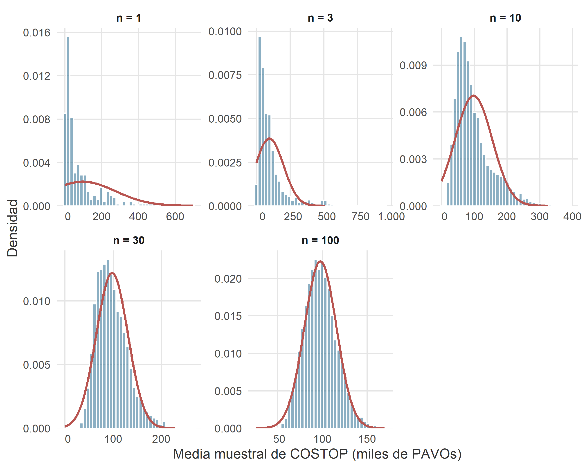

11 Convergencia y teoremas centrales del límite

Figura 11.1. Cada carguero, tomado uno a uno, tiene su carácter. La flotilla, en promedio, no tiene ninguno: es simplemente normal.
— Nota manuscrita al margen de un informe trimestral firmado por la analista jefe Ripley Strix, encontrado durante una auditoría rutinaria al sector logístico de kaiju haulage co.
11.1 Introducción
En el capítulo anterior desfilaron la uniforme, la exponencial, la normal y la log-normal. En cada uno de esos modelos, la campana normal apareció con más o menos disimulo: como aproximación de la binomial, como aproximación de la Poisson, como distribución conjugada de la log-normal, como distribución límite invocada de refilón. Que la normal aparezca una vez puede considerarse coincidencia; que aparezca dos ya es sospechoso; que aparezca siempre exige explicación.
La explicación se llama teorema central del límite (TCL, para los amigos). Es, sin exageración retórica, el resultado más importante de toda la probabilidad clásica y el pilar sobre el que se sostiene la inferencia estadística que ocupará el resto del curso. Su enunciado es sencillo de recordar y de una potencia desproporcionada: la suma de muchas variables aleatorias independientes, bajo condiciones muy poco exigentes, se distribuye aproximadamente como una normal, con independencia casi absoluta de cómo se distribuyan las variables sumandas.
Este capítulo se organiza en torno a tres ideas:
- Antes de hablar de un teorema del límite hace falta precisar qué significa que una sucesión de variables aleatorias tienda a algo. Introducimos brevemente los modos de convergencia relevantes y enunciamos la ley de los grandes números como aperitivo.
- Presentamos el TCL en su forma general (Lindeberg–Lévy) y sus dos casos particulares más útiles en la práctica: la aproximación binomial → normal (De Moivre–Laplace) y la aproximación Poisson → normal.
- Cerramos el círculo con el esquema completo de aproximaciones que enlaza a la binomial, la Poisson y la normal, junto con las reglas prácticas que determinan cuándo aplicar cada una, y con las aplicaciones económicas que el TCL habilita: diversificación, encuestas, seguros e inferencia.
Cómo leer este capítulo. El capítulo es teórico —no hay una nueva distribución que memorizar—, pero se apoya en simulaciones y ejemplos numéricos con entidades del universo RStars. Al terminar debería quedar claro por qué, en la práctica, casi cualquier promedio muestral acaba pareciendo una campana, aunque los datos originales no la tengan ni de lejos.
11.2 Convergencia de sucesiones de variables aleatorias
Cuando se habla de convergencia de sucesiones de números —“la sucesión \(x_{n} = 1/n\) converge a \(0\)”— la idea es intuitiva: para \(n\) grande, los términos están arbitrariamente cerca del límite. Con variables aleatorias la cosa se complica: cada \(\xi_{n}\) no es un número, sino una distribución. Definir cerca exige más cuidado. En lo que sigue solo necesitamos dos nociones.
11.2.1 Convergencia en probabilidad
Se dice que una sucesión de variables aleatorias \(\{\xi_{n}\}\) converge en probabilidad a una variable \(\xi\) si, para todo \(\varepsilon > 0\),
\[ \lim_{n \to \infty} P\left( |\xi_{n} - \xi| > \varepsilon \right) \;=\; 0. \]
Se escribe \(\xi_{n} \xrightarrow{P} \xi\). En palabras: por grande que sea \(n\), la probabilidad de que \(\xi_{n}\) se aleje del límite en más que un margen fijo tiende a cero. No es que \(\xi_{n}\) sea exactamente \(\xi\) para \(n\) grande —de hecho, no lo será casi nunca—, pero la probabilidad de errar por mucho se hace despreciable.
11.2.2 La ley (débil) de los grandes números
El ejemplo canónico —y el más importante en la práctica— de convergencia en probabilidad es la ley (débil) de los grandes números (LGN). Si \(\xi_{1}, \xi_{2}, \ldots\) son variables aleatorias independientes e idénticamente distribuidas (i.i.d., abreviatura estándar) con media \(\mu\) y varianza finita, entonces la media muestral
\[ \bar{\xi}_{n} \;=\; \frac{\xi_{1} + \xi_{2} + \cdots + \xi_{n}}{n} \]
converge en probabilidad a \(\mu\):
\[ \bar{\xi}_{n} \;\xrightarrow{P}\; \mu \quad \text{cuando } n \to \infty. \]
En palabras llanas: si tomamos suficientes observaciones y calculamos su media, esa media se parecerá tanto como queramos a la verdadera media poblacional. Es el principio que legitima usar una muestra grande para estimar un parámetro desconocido.
Existe también una versión más fuerte —la ley fuerte de los grandes números— que garantiza que la convergencia ocurre no solo “en probabilidad” sino “casi seguramente”: el conjunto de las sucesiones \((\xi_1, \xi_2, \ldots)\) para las que la media muestral no tiende a \(\mu\) tiene probabilidad cero. Para el uso ordinario en un curso de ADE la distinción es puramente académica; la LGN débil resuelve todos los problemas prácticos que nos vamos a plantear. Basta con saber que existen dos versiones y que la fuerte implica a la débil.
Un pequeño aviso: la LGN dice a dónde tiende la media muestral, pero no dice a qué velocidad ni con qué error. Para eso hará falta el TCL.
11.2.3 La LGN en la vida económica: seguros, casinos y encuestas
Antes de continuar, merece la pena detenerse un momento en el enorme peso económico de la LGN, porque tres industrias multimillonarias descansan literalmente sobre ella.
Los seguros. Una compañía de seguros no puede predecir si el asegurado individual Ripley Strix sufrirá un siniestro este año; su probabilidad es una lotería. Pero si la compañía asegura a decenas de miles de perfiles similares, el coste promedio por póliza —que es lo único que necesita saber para fijar primas y provisiones— será, por LGN, casi exactamente el coste esperado teórico. La aseguradora convierte, gracias al agregado, incertidumbre individual en previsibilidad colectiva. Es literalmente el modelo de negocio.
Los casinos. La casa no puede prever si un jugador concreto se irá con las manos vacías o con un jackpot. Pero como cada juego ofrece a la casa una esperanza matemática ligeramente positiva y se juegan millones de manos al día, por LGN el beneficio agregado del casino converge al valor esperado teórico. Cuando un cliente enfadado protesta que “a la larga la casa siempre gana”, no se le está escamoteando nada: se está enunciando la LGN aplicada al margen del jugador.
Las encuestas y el market making. Una encuesta a 2.000 votantes no acierta lo que va a votar cada uno; acierta —por LGN— la proporción del colectivo. Un market maker que compra y vende millones de acciones al día no gana ni pierde en cada operación; gana, por LGN, la esperanza matemática del spread. Sin la LGN, ni las encuestas ni la microestructura de los mercados financieros modernos serían viables.
Retengamos la idea general: el negocio de vender previsibilidad, en cualquiera de sus formas, es el negocio de aplicar la LGN a escala industrial.
11.2.4 Convergencia en distribución
La segunda noción es más débil pero más útil en los teoremas del límite. Se dice que \(\{\xi_{n}\}\) converge en distribución a una variable \(\xi\) si, para todo punto \(x\) de continuidad de la función de distribución límite \(F\),
\[ \lim_{n \to \infty} F_{\xi_{n}}(x) \;=\; F(x). \]
Se escribe \(\xi_{n} \xrightarrow{d} \xi\). Ya no exigimos que \(\xi_{n}\) y \(\xi\) se acerquen valor a valor: basta con que las funciones de distribución —y por tanto las probabilidades que asignan a intervalos— se parezcan cada vez más. Es la convergencia adecuada para hablar del TCL, donde lo relevante no es el valor concreto de una suma, sino la forma de su distribución.
Convergencia en probabilidad vs. convergencia en distribución. La primera implica la segunda —si \(\xi_{n}\) y \(\xi\) están cerca, sus distribuciones también—, pero el recíproco es falso. Dos variables pueden tener la misma distribución sin coincidir jamás en valor. La convergencia en distribución es, en cierto sentido, la que “menos pide”. Por eso es la más frecuente en los enunciados de teoremas del límite.
11.3 Teorema central del límite: la versión general
11.3.1 La intuición: la campana emergente
Empecemos por el fenómeno antes que por el enunciado. Consideremos la variable COSTOP del fichero interestelar_300.xlsx, que en el capítulo anterior identificamos como log-normal: muy asimétrica, con la mayoría de empresas concentradas en costes bajos y una cola larga hacia la derecha. Nada más lejano a una campana normal.
Ahora hagamos un experimento mental (y en un momento, real). Tomemos \(n\) empresas al azar, calculemos el coste operativo medio de esas \(n\), y anotemos ese número. Repitamos la operación miles de veces, cambiando cada vez las empresas seleccionadas. Obtendremos miles de valores de la media muestral \(\bar{\xi}_{n}\). La pregunta es: ¿qué distribución sigue esta nueva variable \(\bar{\xi}_{n}\)?
La respuesta la anticipa el TCL: conforme \(n\) crece, la distribución de \(\bar{\xi}_{n}\) se vuelve normal, con independencia de que la variable original no lo fuera en absoluto. La asimetría se disuelve, las colas se reducen, y la campana emerge sola.
La figura 11.2 hace visible este fenómeno. En el primer panel se muestra la distribución empírica de COSTOP sobre las 300 empresas: fuertemente asimétrica. En los paneles siguientes se muestra la distribución de la media muestral \(\bar{\xi}_{n}\) para tamaños \(n = 3, 10, 30\) y \(100\), obtenida remuestreando 5000 veces sobre la población. El progreso hacia la campana es visible y sistemático: cuanto mayor es \(n\), más simétrica, más concentrada y más normal es la distribución de la media.

Figura 11.2. Ilustración empírica del TCL. En el panel etiquetado como \(n = 1\) se muestra la distribución original de la variable COSTOP (costes operativos, en miles de PAVOs) sobre las 300 empresas del fichero interestelar_300.xlsx: fuertemente asimétrica, muy lejos de una normal. En los paneles restantes se muestra la distribución de la media muestral \(\bar{\xi}_{n}\) para tamaños \(n = 3, 10, 30, 100\), obtenida remuestreando 5000 veces con reemplazamiento. La curva roja superpone en cada caso la normal \(N(\mu;\, \sigma/\sqrt{n})\) predicha por el TCL. La convergencia a la campana es sistemática, aun cuando la distribución de partida no lo es en absoluto.
La tabla 11.1 resume el fenómeno cuantitativamente. La media de las medias se mantiene prácticamente constante en torno a \(\mu \approx 97,8\) miles de PAVOs (como anticipa la LGN), pero la desviación típica de \(\bar{\xi}_{n}\) decrece con \(\sqrt{n}\): al pasar de \(n = 3\) a \(n = 100\), la dispersión se divide aproximadamente por \(\sqrt{100/3} \approx 5{,}77\). Este comportamiento —la desviación típica de la media muestral es \(\sigma / \sqrt{n}\)— es el sello del TCL.
| \(n\) | Media de \(\bar{\xi}_{n}\) | SD empírica de \(\bar{\xi}_{n}\) | SD teórica \(\sigma / \sqrt{n}\) |
|---|---|---|---|
| 1 | 97.80 | 179.27 | 179.27 |
| 3 | 100.85 | 106.72 | 103.50 |
| 10 | 97.29 | 55.93 | 56.69 |
| 30 | 97.78 | 32.61 | 32.73 |
| 100 | 97.79 | 17.87 | 17.93 |
Tabla 11.1. Media y desviación típica de la media muestral \(\bar{\xi}_{n}\) obtenidas por simulación (5000 réplicas) sobre la variable COSTOP para distintos tamaños \(n\). La media se mantiene estable (LGN); la desviación típica decrece con \(\sqrt{n}\) (TCL), y coincide muy de cerca con la predicción teórica \(\sigma / \sqrt{n}\).
Con la intuición asentada, pasamos al enunciado formal.
11.3.2 Enunciado (Lindeberg–Lévy)
La versión más útil y limpia del TCL —debida a los matemáticos Jarl Lindeberg y Paul Lévy en los años veinte— es la siguiente.
Sea \(\{\xi_{n}\}\) una sucesión de variables aleatorias independientes e idénticamente distribuidas (i.i.d.) con media \(E(\xi_{j}) = \mu\) y varianza \(\operatorname{Var}(\xi_{j}) = \sigma^{2} < \infty\) para todo \(j\). Sea \(\eta_{n} = \xi_{1} + \xi_{2} + \cdots + \xi_{n}\) su suma. Entonces:
\[ \frac{\eta_{n} - n \mu}{\sqrt{n\, \sigma^{2}}} \;\xrightarrow{d}\; N(0;\, 1) \quad \text{cuando } n \to \infty. \]
Equivalentemente, en términos de la media muestral \(\bar{\xi}_{n} = \eta_{n} / n\):
\[ \frac{\bar{\xi}_{n} - \mu}{\sigma / \sqrt{n}} \;\xrightarrow{d}\; N(0;\, 1). \]
Las dos versiones dicen exactamente lo mismo, escrito una vez para sumas y otra para medias. La suma \(\eta_{n}\) se comporta aproximadamente como una \(N(n \mu;\, \sqrt{n}\, \sigma)\), y la media \(\bar{\xi}_{n}\) se comporta aproximadamente como una \(N(\mu;\, \sigma / \sqrt{n})\), siempre que \(n\) sea suficientemente grande.
Las condiciones son sorprendentemente laxas: independencia, distribución común, varianza finita. Ni una palabra sobre la forma de la distribución original. Los \(\xi_{j}\) pueden ser Bernoullis (0 o 1), pueden ser exponenciales (una cola larga y desagradable), pueden ser uniformes, pueden ser variables muy asimétricas como la COSTOP del ejemplo anterior. Si son i.i.d. con varianza finita, el TCL funciona. Esta universalidad es la razón de su omnipresencia.
¿Y si las condiciones no se cumplen? El TCL tiene versiones más generales para variables no idénticamente distribuidas (condición de Lindeberg), débilmente dependientes (procesos estacionarios), o incluso vectoriales (TCL multivariante). En cualquier introducción como esta bastará con Lindeberg–Lévy. Cuando una variable tenga colas tan pesadas que su varianza no exista —como la distribución de Cauchy—, el TCL clásico falla y aparecen distribuciones límite alternativas (\(\alpha\)-estables). Es un mundo interesante, pero muy fuera del alcance de este manual.
11.3.3 El error estándar y las cuatro fórmulas de referencia
La cantidad \(\sigma / \sqrt{n}\) que aparece en el denominador del TCL para medias tiene tal centralidad práctica que ha ganado nombre propio: se denomina error estándar (standard error, SE) de la media muestral. No es la desviación típica de la variable original, sino la desviación típica del estimador: mide cuánto oscila la media muestral en torno a la verdadera media poblacional cuando repetimos el muestreo.
Es imprescindible distinguir bien los dos conceptos:
- \(\sigma\) es la variabilidad de la población. No depende de \(n\): es la que hay.
- \(\sigma / \sqrt{n}\) es la variabilidad de la media muestral. Sí depende de \(n\): al aumentar el tamaño muestral, cae como \(1/\sqrt{n}\).
Toda la inferencia estadística del próximo bloque se moverá entre estos dos conceptos. Diremos “el error estándar” muchísimas veces; conviene tenerlo instalado desde ya.
Con el error estándar en la mano, el TCL admite cuatro aplicaciones canónicas que aparecen sistemáticamente en la práctica del analista. La tabla 11.2 las resume.
| Estadístico | Distribución aproximada | Uso típico |
|---|---|---|
| Suma \(\eta_n = \xi_1 + \cdots + \xi_n\) | \(N\!\left(n\mu;\; \sigma\sqrt{n}\right)\) | Tonelaje total, ingresos anuales agregados, siniestros totales. |
| Media muestral \(\bar\xi_n\) | \(N\!\left(\mu;\; \sigma / \sqrt{n}\right)\) | Precio medio, tiempo medio, coste medio. |
| Proporción muestral \(\hat p = X/n\) (con \(X \to B(n; p)\)) | \(N\!\left(p;\; \sqrt{p q / n}\right)\) | Encuestas electorales, tasa de fallo, tasa de conversión. |
| Diferencia de medias \(\bar\xi_n - \bar\eta_m\) (muestras indep.) | \(N\!\left(\mu_1 - \mu_2;\; \sqrt{\sigma_1^{2}/n + \sigma_2^{2}/m}\right)\) | Comparar dos grupos: test A/B, dos sucursales, dos periodos. |
Tabla 11.2. Las cuatro aplicaciones canónicas del TCL. Todas comparten la misma raíz: la suma o el promedio de variables aleatorias independientes es aproximadamente normal para \(n\) grande. Las tres últimas líneas serán la base operativa de la inferencia estadística del próximo bloque.
Los tres últimos casos son la base operativa de casi cualquier análisis empresarial que involucre datos: encuestas, tests A/B para comparar dos versiones de una web, estudios de impacto para comparar dos periodos, control de calidad, gestión de riesgos… En cada uno de ellos, la estrategia es siempre la misma: identificar el estimador, calcular su error estándar, tipificar y consultar la normal.
11.3.4 ¿Qué significa “\(n\) suficientemente grande”?
La pregunta pragmática que sigue al enunciado es: ¿a partir de qué \(n\) podemos empezar a usar el TCL sin sonrojarnos? La respuesta honesta es “depende de la distribución de partida”:
- Si los \(\xi_{j}\) son ya aproximadamente simétricos y sin colas pesadas, \(n \geq 30\) suele ser más que suficiente. Muchos manuales fijan \(n \geq 30\) como umbral de referencia y no van descaminados.
- Si los \(\xi_{j}\) son marcadamente asimétricos —como los costes operativos, ingresos o tamaños de flota—, la aproximación es peor y conviene exigir \(n\) bastante mayor (típicamente \(n \geq 100\)).
- Si los \(\xi_{j}\) son binarios (Bernoulli), el criterio operativo será \(n p \geq 5\) y \(n q \geq 5\), que veremos en la sección siguiente.
En cualquier caso, el TCL es un teorema asintótico: cuanto mayor sea \(n\), mejor será la aproximación. Los umbrales son heurísticos.
11.3.5 Ejemplo: tiempo medio de descarga en Klendathu
Pasamos ahora a un ejemplo numérico concreto. El astropuerto de Klendathu, base operativa de cuatro cargueros por astillero según el fichero astilleros_48.xlsx, procesa a lo largo del día un elevado número de descargas. El tiempo de descarga de un contenedor individual, medido en minutos, es una variable claramente no normal: la mayoría de contenedores se despachan en \(8\)–\(15\) minutos, pero algunos —los que exigen inspección aduanera, o los que llegan con documentación irregular— se prolongan una hora o más. La distribución tiene una fuerte cola derecha y se aproxima razonablemente por una exponencial con media \(\mu = 12\) minutos y desviación típica \(\sigma = 12\) minutos (recuerde: en la exponencial, media y desviación típica coinciden).6
La jefa de operaciones del turno, Padmé Ardea, prepara un informe semanal donde figura el tiempo medio de descarga de los primeros \(n = 60\) contenedores del turno. Es decir, la variable
\[ \bar{\xi}_{60} \;=\; \frac{\xi_{1} + \xi_{2} + \cdots + \xi_{60}}{60}, \]
con los \(\xi_{j}\) exponenciales i.i.d. con media \(12\) y desviación típica \(12\).
¿Qué distribución sigue \(\bar{\xi}_{60}\)? La distribución exponencial es asimétrica —lo vimos en el capítulo 10— y por tanto los tiempos individuales no son normales. Pero por el TCL (Lindeberg–Lévy), con \(n = 60\) el promedio ya se comporta aproximadamente como una normal, con error estándar \(\sigma / \sqrt{n} = 12/\sqrt{60} \approx 1{,}549\):
\[ \bar{\xi}_{60} \;\approx\; N\!\left( 12;\; \frac{12}{\sqrt{60}} \right) \;=\; N(12;\, 1{,}549). \]
La media es la misma que la de un tiempo individual (\(12\) minutos). Pero el error estándar es solo \(1{,}55\) minutos: el promedio de 60 contenedores es unas \(\sqrt{60} \approx 7{,}75\) veces más concentrado que un contenedor individual. Es la razón matemática por la que promediar reduce el ruido: no es magia, es TCL.
Preguntas concretas del informe de Padmé Ardea:
-
Que el tiempo medio de descarga del turno sea inferior a \(11\) minutos.
Tipificando con \(\mu = 12\) y error estándar \(\approx 1{,}549\):
\[ z = \frac{11 - 12}{1{,}549} \approx -0{,}65 \quad\Longrightarrow\quad P(\bar{\xi}_{60} < 11) \approx 0,2593. \]
Alrededor de un \(26\,\%\) de los turnos, la operación transcurre con inusual soltura.
-
Que la media caiga en la franja aceptable \([10;\, 13]\) minutos.
\[ P(10 \leq \bar{\xi}_{60} \leq 13) \approx 0,6423. \]
Alrededor de dos tercios de los turnos. Estable, pero no perfecto.
-
Que la media supere los \(14\) minutos (umbral de alerta).
\[ P(\bar{\xi}_{60} > 14) \approx 0,0984. \]
Menos de un \(10\,\%\) de los turnos, aproximadamente un turno de cada diez.
Un ejercicio mental que conviene hacer. La misma pregunta sobre un contenedor individual da resultados muy diferentes. La probabilidad de que un contenedor individual tarde más de 14 minutos, siendo su tiempo exponencial de media 12, es \(P(\xi > 14) = e^{-14/12} \approx 0,3114\) —¡más del \(31\,\%\)! El promedio de 60 contenedores no supera los 14 minutos casi nunca, aunque uno de cada tres contenedores individualmente sí lo haga. La agregación concentra al arrastrar los valores hacia la media. Esa es la lección práctica del TCL, resumida en una línea.
11.4 Teorema central del límite: el caso binomial
Con la versión general en la mano, pasamos ahora a los dos casos particulares que se usan una y otra vez en la práctica. El primero es histórica y pedagógicamente el más antiguo: la aproximación binomial → normal, debida a Abraham de Moivre (1733) y refinada por Pierre-Simon Laplace (1812) más de un siglo antes de que Lindeberg y Lévy formularan el resultado general. Puestos a poner nombres a las cosas, sería más justo llamarlo teorema de De Moivre–Laplace, que es como aparece en los manuales cuidadosos.
11.4.1 Enunciado
Sea \(\eta_{n} \to B(n;\, p)\) una variable binomial. Recuérdese que \(\eta_{n}\) puede escribirse como suma de \(n\) Bernoullis \(\xi_{j} \to B(1;\, p)\) independientes:
\[ \eta_{n} \;=\; \xi_{1} + \xi_{2} + \cdots + \xi_{n}, \]
con \(E(\xi_{j}) = p\) y \(\operatorname{Var}(\xi_{j}) = p q\) (donde \(q = 1 - p\)). Aplicando el TCL de Lindeberg–Lévy directamente:
\[ \frac{\eta_{n} - n p}{\sqrt{n p q}} \;\xrightarrow{d}\; N(0;\, 1) \quad \text{cuando } n \to \infty. \]
Es decir, para \(n\) grande:
\[ \eta_{n} \;\approx\; N\!\left( n p;\; \sqrt{n p q} \right). \]
El criterio operativo para considerar aceptable la aproximación es doble:
\[ n p \geq 5 \quad \text{y} \quad n q \geq 5. \]
Cuando ambos productos superan el \(5\), la binomial es lo bastante “simétrica” para que la campana la aproxime bien. Cuando alguno de los dos no llega —típicamente porque \(p\) es muy pequeño o muy grande—, la binomial está pegada a un extremo y la normal no es un buen modelo (en esos casos, si además \(n\) es grande, funcionará mejor la aproximación por Poisson que veremos más adelante).
11.4.2 Ejemplo: rutas exitosas de arrakis freight
arrakis freight opera \(n = 200\) rutas comerciales semanales en el corredor de la Gran Nube de Magallanes. La probabilidad de que una ruta individual se complete sin ninguna incidencia (retraso, avería, desvío, decomiso aduanero) es del \(p = 0{,}70\), cifra estimada a partir del histórico consolidado.7 Sea
\[ \eta \;=\; \text{"número de rutas exitosas en la semana"} \;\to\; B(200;\, 0{,}70). \]
Verificamos las condiciones: \(n p = 140 \geq 5\) y \(n q = 60 \geq 5\). Podemos aproximar sin cargo de conciencia:
\[ \eta \;\approx\; N\!\left( 140;\; \sqrt{200 \cdot 0{,}7 \cdot 0{,}3} \right) \;=\; N(140;\, 6,481). \]
Preguntas de la analista Ripley Strix al preparar la memoria trimestral:
-
Probabilidad de completar menos de \(130\) rutas exitosas.
Tipificando: \(z = (130 - 140) / 6,481 \approx -1{,}54\).
\[ P(\eta < 130) \;\approx\; P(\xi^{*} < -1{,}54) \;=\; 0,0614. \]
Alrededor de un \(6\,\%\) de las semanas. Poco frecuente, pero no imposible.
-
Probabilidad de completar entre \(130\) y \(150\) rutas.
\[ P(130 \leq \eta \leq 150) \;\approx\; 0,8772. \]
Alrededor del \(85\,\%\) de las semanas. La franja habitual.
-
Probabilidad de completar \(150\) o más rutas.
\[ P(\eta \geq 150) \;\approx\; 0,0614. \]
Alrededor de un \(6\,\%\) de las semanas. Semanas de gloria, dignas de mención en el informe.
Sin la aproximación normal, habría que sumar términos binomiales del tipo \(\binom{200}{k}\, 0{,}7^{k}\, 0{,}3^{200-k}\) para todos los \(k\) relevantes. Con la aproximación, tres tipificaciones y una consulta a la tabla resuelven el problema. Y el error, como veremos enseguida, es minúsculo.
11.4.3 La corrección por continuidad
Hay un detalle técnico que conviene conocer aunque no siempre lo apliquemos. La binomial es una variable discreta (toma solo valores enteros); la normal es continua. Al aproximar una por la otra, hay un pequeño desajuste conceptual que se corrige con el llamado factor de corrección por continuidad o corrección de Yates.
La idea, en su forma más simple: cada valor entero \(k\) de la binomial “ocupa”, desde el punto de vista de la normal aproximante, el intervalo \([k - 0{,}5;\, k + 0{,}5]\). Por tanto:
- \(P(\eta \leq k) \;\approx\; P\!\left( N \leq k + 0{,}5 \right)\).
- \(P(\eta \geq k) \;\approx\; P\!\left( N \geq k - 0{,}5 \right)\).
- \(P(\eta = k) \;\approx\; P\!\left( k - 0{,}5 \leq N \leq k + 0{,}5 \right)\).
Aplicado al ejemplo de arrakis freight, la probabilidad de completar \(150\) o más rutas se calcularía con corrección como
\[ P(\eta \geq 150) \;\approx\; P\!\left( N \geq 149{,}5 \right) \;=\; 0,0713, \]
frente al \(0,0614\) sin corrección. La probabilidad exacta binomial, calculable en R con pbinom(149, 200, 0.7, lower.tail = FALSE), es \(0,0695\). La corrección se acerca ligeramente más al valor exacto, como cabía esperar.
La tabla 11.3 resume la comparación en las tres probabilidades del ejemplo.
| Evento | Probabilidad exacta (binomial) | Aproximación normal (sin corrección) | Aproximación normal (con corrección) |
|---|---|---|---|
| \(P(\eta < 130)\) | 0.0542 | 0.0614 | 0.0526 |
| \(P(\eta \geq 150)\) | 0.0695 | 0.0614 | 0.0713 |
Tabla 11.3. Ejemplo arrakis freight: comparación entre la probabilidad exacta binomial y las dos aproximaciones normales, con y sin corrección por continuidad. Las diferencias entre métodos son inferiores a un punto porcentual; la corrección por continuidad reduce el error residual y acerca la aproximación normal al valor exacto, sin eliminarlo por completo.
En la práctica: para \(n\) moderado (digamos \(n < 100\)) la corrección por continuidad merece la pena; para \(n\) grande el efecto es despreciable y suele omitirse. En este manual seguiremos la convención del material docente y no aplicaremos la corrección por defecto, aunque conviene tenerla presente y aplicarla si se pide expresamente o si el resultado va a compararse con probabilidades exactas.
11.5 Aproximación Poisson → normal
El segundo caso particular del TCL que interesa retener es la aproximación Poisson → normal. La idea es la misma: una Poisson con parámetro \(\lambda\) grande puede escribirse como suma de muchas Poissons de parámetro pequeño, y por el TCL esa suma se aproxima a una normal.
11.5.1 Enunciado
Sea \(\eta \to \mathrm{Po}(\lambda)\). Para \(\lambda\) grande:
\[ \eta \;\approx\; N\!\left( \lambda;\; \sqrt{\lambda} \right). \]
Es decir, la Poisson se aproxima por una normal con la misma media y desviación típica \(\sqrt{\lambda}\). El criterio operativo habitual es \(\lambda \geq 10\) (algunos manuales flexibilizan hasta \(\lambda \geq 5\), pero la calidad de la aproximación en ese rango es discutible). Como en el caso binomial, se puede aplicar corrección por continuidad, aunque su efecto es marginal para \(\lambda\) grande.
11.5.2 Ejemplo: incidencias graves acumuladas en la flota KORRIGAN
El astillero KORRIGAN opera \(16\) cargueros según el fichero astilleros_48.xlsx. Las incidencias graves (variable IIG) se distribuyen razonablemente como una Poisson, con una tasa media de \(4{,}0\) incidencias por nave a lo largo de la vida operativa registrada.8 El ingeniero Anakin Falco, jefe de mantenimiento —a quien ya conocimos en el capítulo 10—, quiere estimar el número total de incidencias graves esperado en la flota completa durante los próximos cinco años, suponiendo constante la tasa histórica.
Si por cada nave se esperan aproximadamente \(1{,}5\) incidencias en los próximos cinco años, el total esperado para las \(16\) naves es \(\lambda = 16 \cdot 1{,}5 = 24\). Sea
\[ \eta \;=\; \text{"nº total de incidencias graves en la flota KORRIGAN a 5 años"} \;\to\; \mathrm{Po}(24). \]
Con \(\lambda = 24 \gg 10\), la aproximación normal es totalmente aceptable:
\[ \eta \;\approx\; N\!\left( 24;\; \sqrt{24} \right) \;=\; N(24;\, 4,899). \]
Preguntas de Anakin Falco al preparar el presupuesto de mantenimiento:
-
Probabilidad de que la flota acumule menos de \(20\) incidencias graves en cinco años.
Tipificando: \(z = (20 - 24) / 4,899 \approx -0{,}82\).
\[ P(\eta < 20) \;\approx\; 0,2071. \]
Alrededor de un \(20\,\%\): un escenario optimista pero no desechable.
-
Probabilidad de que las incidencias caigan en el rango de planificación \([18;\, 30]\).
\[ P(18 \leq \eta \leq 30) \;\approx\; 0,7793. \]
Alrededor del \(80\,\%\) de los escenarios. El presupuesto se dimensiona sobre este rango.
-
Probabilidad de exceder las \(35\) incidencias (umbral que dispararía una revisión estratégica).
Tipificando: \(z = (35 - 24) / 4,899 \approx 2{,}25\).
\[ P(\eta > 35) \;\approx\; 0,0124. \]
Alrededor de un \(1\,\%\). Muy poco probable, aunque prudencia dicta contemplarlo. El valor exacto de Poisson, para comparación, es \(0,0132\): prácticamente idéntico. La aproximación es excelente.
El caso agregado como TCL puro. La flota KORRIGAN es un caso instructivo porque el TCL opera dos veces sin decirlo. En primer lugar, cada nave individual acumula incidencias en cinco años como una Poisson pequeña (\(\lambda_{j} = 1{,}5\)), asimétrica y muy poco normal. Al sumar las 16 naves, obtenemos una Poisson agregada con \(\lambda = 24\) que ya es prácticamente indistinguible de una normal. La agregación —de naves, de rutas, de contenedores, de trabajadores— es el motor silencioso por el que la normal aparece en todo problema empresarial mínimamente colectivo.
11.6 El esquema completo de aproximaciones
Recogemos ahora todas las aproximaciones vistas hasta aquí, incluidas las del capítulo 9 (binomial → Poisson), en un solo mapa. La figura 11.3 es el resumen visual, y la tabla 11.4 da los criterios operativos.

Figura 11.3. Esquema de las aproximaciones entre modelos discretos y normal. La binomial admite dos rutas de aproximación: hacia Poisson (cuando \(p\) es pequeño y \(n\) es moderado o grande) y hacia normal (cuando ni \(p\) ni \(q\) son extremos). La Poisson, a su vez, se aproxima por normal cuando \(\lambda\) es grande. La normal es el destino común de todas las trayectorias: es el atractor probabilístico universal.
| Distribución de partida | Distribución aproximante | Criterio operativo | Justificación teórica |
|---|---|---|---|
| Binomial \(B(n; p)\) | Poisson \(\mathrm{Po}(n p)\) | \(n \geq 100\) y \(p \leq 0{,}05\) | Sucesos raros: la Poisson es el límite de la binomial cuando \(p \to 0\) manteniendo \(n p\) constante. |
| Binomial \(B(n; p)\) | Normal \(N(n p;\, \sqrt{n p q})\) | \(n p \geq 5\) y \(n q \geq 5\) | TCL en su versión De Moivre–Laplace: la binomial es una suma de \(n\) Bernoullis i.i.d. |
| Poisson \(\mathrm{Po}(\lambda)\) | Normal \(N(\lambda;\, \sqrt{\lambda})\) | \(\lambda \geq 10\) | TCL: una Poisson de parámetro grande es suma de muchas Poisson pequeñas. |
Tabla 11.4. Esquema de aproximaciones. Los tres puentes que conectan la binomial, la Poisson y la normal son consecuencia directa o indirecta del teorema central del límite. Los criterios operativos son heurísticos: cuanto más holgadamente se cumplan, mejor será la aproximación.
11.6.1 Ejemplo integrado: pruebas de nuevos motores en el astillero SELENE
Un ejemplo compuesto ilustra cómo las tres aproximaciones se encadenan en la práctica. El astillero SELENE, con base en el sector Miranda, está sometiendo a validación una nueva generación de motores de curvatura. En el programa de pruebas se someterán a estrés extremo \(n = 400\) motores prototípicos, y se sabe por experiencia previa —el prototipo generacional anterior— que la probabilidad de que un motor individual falle durante las pruebas es de \(p = 0{,}03\).
Sea \(\eta\) = “número de motores que fallan durante las pruebas”, \(\eta \to B(400;\, 0{,}03)\).
Comprobamos qué aproximaciones son aplicables:
- Binomial → Poisson. \(n = 400 \geq 100\) y \(p = 0{,}03 \leq 0{,}05\). Sí. Aproximamos \(\eta \approx \mathrm{Po}(n p) = \mathrm{Po}(12)\).
- Poisson → Normal. \(\lambda = 12 \geq 10\). Sí. Aproximamos \(\eta \approx N(12;\, \sqrt{12}) = N(12;\, 3,464)\).
- Binomial → Normal directamente. \(n p = 12 \geq 5\) y \(n q = 388 \geq 5\). Sí. Aproximamos \(\eta \approx N(12;\, \sqrt{n p q}) = N(12;\, 3,412)\).
Las dos rutas hacia la normal —vía Poisson intermedia y directa— convergen prácticamente al mismo resultado: la desviación típica \(\sqrt{n p q} = 3,412\) solo difiere de \(\sqrt{\lambda} = 3,464\) en el factor \(\sqrt{q} = \sqrt{0{,}97} \approx 0{,}985\), que es despreciable en la práctica. La tabla 11.5 verifica esta convergencia calculando la misma probabilidad —que fallen \(15\) o más motores— por los cuatro caminos.
| Método de cálculo | \(P(\eta \geq 15)\) |
|---|---|
| Binomial exacta | 0.2252 |
| Poisson exacta | 0.2280 |
| Normal desde binomial | 0.1896 |
| Normal desde Poisson | 0.1932 |
Tabla 11.5. Astillero SELENE: probabilidad de que \(15\) o más motores fallen en las pruebas, calculada por los cuatro caminos posibles. Las dos rutas exactas (binomial y Poisson) coinciden hasta el segundo decimal; las dos rutas normales, entre sí, también. La brecha residual de unos \(3\) puntos porcentuales entre las exactas y las aproximaciones normales es la firma característica del salto de lo discreto a lo continuo, y desaparece prácticamente al aplicar la corrección por continuidad.
La lectura práctica es que, para el rango de parámetros en el que ambas condiciones se cumplen holgadamente, cualquiera de las aproximaciones ordena bien las probabilidades. En términos de comodidad de cálculo, la normal es la más rápida (una sola tipificación); en términos de exactitud, la Poisson exacta queda notablemente más cerca del valor binomial que las normales, sobre todo en las colas. La brecha de unos tres puntos porcentuales entre las exactas y las normales se debe al desajuste entre lo discreto y lo continuo, y desaparece con la corrección por continuidad —comprobación que se deja como ejercicio para el lector curioso.
¿Y si un criterio no se cumple? Reglas prácticas para casos frontera:
- Si \(n p < 5\) pero \(n\) es grande y \(p\) pequeño, use Poisson, no normal. La normal falla porque la binomial está pegada al \(0\).
- Si \(\lambda < 5\), use Poisson exacta. La aproximación normal a Poisson con \(\lambda\) pequeño da probabilidades negativas absurdas en la cola izquierda.
- Si \(n\) es muy pequeño (\(< 30\)), use binomial exacta directamente. No hace falta aproximar nada.
En cualquier duda razonable, calcule por dos vías y compare. Es la mejor forma de verificar que la aproximación empleada es aceptable.
11.7 El TCL como matemática de la diversificación
Ninguna aplicación económica del TCL es tan universalmente citada como la diversificación de riesgos. La idea aparece en cualquier introducción a las finanzas (“no pongas todos los huevos en la misma cesta”), pero su fundamento matemático es exactamente el error estándar \(\sigma / \sqrt{n}\) que llevamos toda la sección utilizando.
Supongamos que la analista Ripley Strix está diseñando una cartera para kaiju haulage co., formada por \(n\) contratos comerciales independientes. Cada contrato \(j = 1, \ldots, n\) tiene una rentabilidad aleatoria \(\xi_{j}\) con esperanza \(E(\xi_{j}) = \mu\) y desviación típica \(\sigma\) idénticas para todos ellos.9 La cartera reparte por igual el capital, con lo que su rentabilidad es la media \(\bar{\xi}_{n}\) de las \(n\) rentabilidades individuales.
- La rentabilidad esperada de la cartera es la misma que la de un contrato individual: \(E(\bar\xi_{n}) = \mu\). Diversificar no cambia el retorno esperado.
- El riesgo de la cartera —medido como desviación típica— es el error estándar: \(\sigma_{\bar\xi_{n}} = \sigma / \sqrt{n}\). Diversificar sí reduce el riesgo, y lo hace a razón de \(1/\sqrt{n}\).
En cifras: con un solo contrato (\(n = 1\)), el riesgo es \(\sigma\). Con cuatro contratos, cae a \(\sigma / 2\). Con cien, a \(\sigma / 10\). Con diez mil, a \(\sigma / 100\). Y el fenómeno no depende de la forma de la distribución individual: pueden ser exponenciales, log-normales o cualquier otra cosa. El TCL, además, garantiza que para \(n\) grande la rentabilidad total se distribuya aproximadamente como una normal, aunque cada contrato individual no lo fuera. La figura 11.4 lo ilustra.

Figura 11.4. Reducción del riesgo por diversificación. Manteniendo constante la rentabilidad esperada, el riesgo de una cartera de \(n\) activos independientes cae como \(\sigma/\sqrt{n}\). Con solo \(10\) activos, el riesgo se reduce en más del \(65\,\%\) respecto al del activo individual; con \(100\), en un \(90\,\%\). La marginalidad del beneficio de añadir activos disminuye rápidamente: es la ley de rendimientos decrecientes de la diversificación.
Esta ley de \(1/\sqrt{n}\) es la razón matemática por la que las carteras diversificadas dominan a las concentradas, por la que un fondo indexado en 500 empresas es menos volátil que una empresa individual, y por la que los seguros pueden ofrecer coberturas por primas relativamente bajas. Es también la razón por la que añadir el activo número 100 a una cartera de 99 reduce muy poco el riesgo: la caída marginal es proporcional a \(1/\sqrt{n+1} - 1/\sqrt{n}\), cada vez más pequeña. Hay rendimientos decrecientes también en la diversificación.
11.8 Simulación del TCL con R
Todo el capítulo se puede ver funcionar en vivo con unas pocas líneas de código. El chunk siguiente, con echo = TRUE, replica el fenómeno central del TCL: tomamos una variable ferozmente no normal —la exponencial— y comprobamos que su media muestral, incluso con \(n\) modesto, ya se comporta como una campana.
set.seed(11)
n <- 30 # tamaño de cada muestra
reps <- 5000 # número de réplicas simuladas
lam <- 1 # tasa de la exponencial: media 1, sd 1
# Distribución individual: una muestra grande de exponenciales
individuales <- rexp(reps, rate = lam)
# Distribución de la media muestral: reps réplicas, cada una la media de n exponenciales
medias <- replicate(reps, mean(rexp(n, rate = lam)))
# Dos paneles superpuestos con patchwork
g1 <- ggplot(tibble(x = individuales), aes(x)) +
geom_histogram(aes(y = after_stat(density)), bins = 40,
fill = pal_apoyo, alpha = 0.55, color = "white") +
labs(title = "Distribución individual", x = "ξ (exponencial)", y = "Densidad") +
theme_libro()
g2 <- ggplot(tibble(x = medias), aes(x)) +
geom_histogram(aes(y = after_stat(density)), bins = 40,
fill = pal_apoyo, alpha = 0.55, color = "white") +
stat_function(fun = dnorm, args = list(mean = 1/lam, sd = (1/lam)/sqrt(n)),
color = pal_acento, linewidth = 1) +
labs(title = paste0("Media muestral (n = ", n, ")"),
x = "Media muestral", y = "Densidad") +
theme_libro()
g1 + g2
Figura 11.5. Simulación en vivo del TCL. La distribución individual (panel izquierdo) es una exponencial de tasa 1: asimétrica, con moda en 0 y una cola larga hacia la derecha. La distribución de la media muestral de \(n = 30\) observaciones (panel derecho), sobre 5.000 réplicas simuladas, es visiblemente una campana. La curva roja es la normal \(N(\mu;\, \sigma/\sqrt{n})\) predicha por el TCL, con \(\mu = 1\) y \(\sigma = 1\).
En pocas líneas se ha condensado toda la mecánica: rexp(n, lam) genera muestras de la variable no normal; replicate(..., mean(...)) calcula miles de medias muestrales; el histograma resultante es prácticamente una campana. Cambiando rexp por runif, rlnorm, rpois o cualquier otra función de simulación, el fenómeno se reproduce con la misma limpieza. Esta es la manera moderna —simple, rápida y persuasiva— de entender el TCL: por observación empírica del fenómeno, antes que por manipulación algebraica del enunciado.
11.9 Consecuencias del TCL: puente hacia la inferencia
Cerramos el capítulo con una anticipación del papel del TCL en lo que viene, que no es poco. Prácticamente toda la estadística inferencial que se cursa en un grado en Economía o ADE se sostiene sobre el teorema central del límite, aunque no siempre se explicite. Cuatro consecuencias concretas anticipan por qué:
- La media muestral de casi cualquier variable es aproximadamente normal. Cuando dispongamos de una muestra de \(n\) observaciones, \(\bar{X}_{n} \approx N(\mu;\, \sigma / \sqrt{n})\), y podremos construir intervalos de confianza y tests de hipótesis para \(\mu\) tipificando —tal cual, como en este capítulo—, sin conocer la forma exacta de la distribución de la variable original.
- La proporción muestral es aproximadamente normal. Si en \(n\) ensayos independientes contamos \(X\) éxitos con probabilidad \(p\), la proporción muestral \(\hat{p} = X/n\) es una binomial reescalada, y por De Moivre–Laplace su distribución es aproximadamente \(N(p;\, \sqrt{p q / n})\). Es la base de las encuestas y estimaciones electorales.
- La diferencia de medias muestrales de dos poblaciones es aproximadamente normal. Combinando el TCL con la propiedad reproductiva de la normal, dos medias muestrales independientes generan una diferencia normal, con lo que se pueden construir tests de igualdad de medias. La base de la comparación estadística de dos grupos, y del muy popular test A/B que usan hoy todas las empresas tecnológicas.
- Cuando σ es desconocida, aparece la t de Student. Esta es la sutileza importante: en la práctica casi nunca conocemos la desviación típica poblacional \(\sigma\); la estimamos con la desviación típica muestral \(s\). Ese pequeño cambio hace que la distribución del cociente \((\bar{X}_{n} - \mu) / (s / \sqrt{n})\) deje de ser exactamente normal y pase a ser una t de Student con \(n - 1\) grados de libertad, con colas ligeramente más gruesas que la normal. Para \(n\) moderado o grande, la diferencia es despreciable y la normal sirve; para \(n\) pequeño, hay que usar la t. Este matiz es el pan de cada día del bloque de inferencia.
En los cuatro casos, la normal aparece como distribución de un estimador, no como distribución de los datos. Los datos originales pueden ser discretos, asimétricos, exóticos o directamente feos; la distribución del estimador —bajo condiciones muy generales— será la campana familiar. Es la razón por la que el resto del curso puede resolverse con una única tabla, la de la normal estándar (y la de la t, casi indistinguible de la normal para \(n\) grande).
El bootstrap: TCL a golpe de teclado. Cuando ni siquiera se sabe qué distribución sigue el estimador —o cuando el TCL no aplica bien porque \(n\) es pequeño o hay dependencias—, existe una alternativa moderna que ya asomó en los capítulos 10 y 11 mediante simulación de Monte Carlo: el bootstrap, propuesto por Bradley Efron en 1979. La idea es escandalosamente simple: se generan miles de “muestras artificiales” remuestreando con reemplazamiento la muestra original, se calcula el estimador en cada una y se estudia empíricamente su distribución. Es TCL sin fórmulas, computado por fuerza bruta. Hoy es la técnica de referencia en gran parte del análisis de datos moderno —desde riesgos financieros hasta machine learning—, y una de las cosas más útiles que un estudiante de ADE puede aprender por su cuenta después del curso.
11.10 Recapitulación
Cuatro ideas conviene retener de este capítulo por encima del resto:
El TCL es un teorema sobre distribuciones límite, no sobre datos. Los datos originales no tienen por qué ser normales para que sus sumas o promedios lo sean. La ubicuidad de la campana en la práctica empresarial no se debe a que la realidad “sea normal”, sino a que las variables que miramos son casi siempre agregados —tonelajes totales, medias diarias, sumas semanales, proporciones muestrales— y los agregados tienden a la normal por el TCL. Esta distinción disuelve un malentendido frecuente.
Las aproximaciones binomial → Poisson → normal no son atajos independientes, sino manifestaciones del mismo mecanismo. Todas son consecuencia, directa o indirecta, del TCL. Los criterios operativos (\(n \geq 100\) y \(p \leq 0{,}05\); \(n p \geq 5\) y \(n q \geq 5\); \(\lambda \geq 10\)) son heurísticos calibrados para que el error sea aceptable en la práctica, no fronteras rígidas.
La agregación reduce la incertidumbre relativa a razón de \(1/\sqrt{n}\). La media muestral de \(n\) observaciones tiene error estándar \(\sigma / \sqrt{n}\): si \(n = 100\), el ruido se divide por diez; si \(n = 10\,000\), por cien. Es la razón matemática por la que las encuestas grandes son más fiables que las pequeñas, por la que promediar reduce el error de un instrumento, por la que las flotas grandes son operativamente más predecibles que las flotas pequeñas y por la que la diversificación reduce el riesgo de una cartera. Cuatro fenómenos aparentemente inconexos que descansan sobre la misma fórmula.
La LGN es la base del negocio de vender previsibilidad; el TCL es la base de la inferencia. Los seguros, los casinos, los market makers y las encuestas funcionan porque la LGN convierte incertidumbre individual en previsibilidad colectiva. Los intervalos de confianza, los tests de hipótesis y los tests A/B funcionan porque el TCL nos garantiza que la distribución de nuestros estimadores es aproximadamente normal. Sin estos dos teoremas, ni la industria del riesgo ni la estadística inferencial tendrían base matemática. Con ellos, se sostiene todo el bloque de aplicaciones que sigue.
En el próximo capítulo, con el TCL como llave maestra, entraremos por fin en inferencia estadística: distribuciones muestrales, estimadores, intervalos de confianza. La normal, que ha ido asomando desde el capítulo 7, acabará de instalarse como protagonista absoluta —no de los datos, sino de las conclusiones que sobre los datos se pueden extraer. Aparecerán como aliadas la ya insinuada t de Student, y también la ji-cuadrado y la F de Snedecor, todas ellas derivadas de la normal y todas ellas nacidas del TCL aplicado a estadísticos de segundo orden. La estadística inferencial, que da miedo por su nombre pero se sostiene sobre las distribuciones que ya conocemos, está por fin a un capítulo de distancia.
11.11 Problemas propuestos.
Este capítulo, más conceptual que los anteriores, tiene un doble objetivo pedagógico: consolidar la intuición de los dos teoremas —LGN y TCL— y aplicarla al cálculo de probabilidades sobre sumas, medias y proporciones, así como a las tres aproximaciones (binomial → Poisson → normal). Los 20 ejercicios que siguen se organizan en dos grandes bloques: los primeros —muy variados y a menudo puramente interpretativos— trabajan la identificación del teorema o la aproximación adecuada y los malentendidos clásicos; los siguientes se ocupan del cálculo dentro de cada caso (media muestral, proporción muestral, diferencia de medias, aproximaciones B→N y Po→N, diversificación). Todas las soluciones detalladas se recogen al final del capítulo.
11.11.1 Problema 11.1. Test de identificación (interpretativo).
Para cada uno de los ocho escenarios siguientes, indica qué teorema o qué aproximación de este capítulo (LGN, TCL, aproximación B→Po, B→N, Po→N o ninguna de ellas) es el más apropiado, y justifica en una línea:
- Una aseguradora quiere estimar el coste medio agregado por asegurado de una cartera de 50 000 pólizas independientes. Cada póliza tiene E(coste)=200 PAVOs y σ=800 PAVOs.
- Un economista quiere calcular la probabilidad de que la media de una muestra de 100 rentas mensuales caiga entre 2 800 y 3 200 PAVOs, sabiendo que las rentas individuales son log-normales muy asimétricas.
- Se lanza 500 veces una moneda cargada con \(p = 0{,}45\) de sacar cara. Se busca calcular P(número de caras ≥ 235).
- Un servidor recibe peticiones con tasa \(\lambda = 200\) por minuto. Se busca calcular P(número de peticiones en 1 minuto < 180).
- Un algoritmo de reserva galáctica reserva plazas para 800 pasajeros; cada pasajero, con probabilidad 0,02 e independientemente, no acude. Se busca calcular P(al menos 20 pasajeros no acudan).
- Con 10 000 apuestas independientes, cada una con esperanza de ganancia -0,05 PAVOs, se afirma que “el casino ganará muy cerca de 500 PAVOs esa jornada”.
- Una encuesta pregunta a 1 200 votantes por su intención de voto al partido A, cuya intención real de voto es del 45%. Se busca la distribución de la proporción muestral \(\hat p\).
- Se comparan las ventas medias en dos sucursales (100 clientes muestreados en cada una) para decidir si una es realmente mejor que la otra.
11.11.2 Problema 11.2. LGN y TCL: verdadero o falso.
Indica si cada una de las siguientes afirmaciones es verdadera o falsa y justifica brevemente en cada caso:
- “El TCL garantiza que, con muestra suficientemente grande, la variable original se distribuye aproximadamente como una normal.”
- “La LGN garantiza que la media muestral se acerca a la media poblacional cuando \(n\) crece.”
- “El TCL solo funciona si la variable de partida es simétrica.”
- “La desviación típica de la media muestral es siempre la misma que la desviación típica de la variable original.”
- “Con \(n = 30\) observaciones el TCL siempre funciona bien, sea cual sea la distribución de partida.”
- “En una ruleta, si han salido 10 rojos seguidos, la probabilidad de que salga negro en la siguiente es mayor por la LGN.”
11.11.3 Problema 11.3. LGN aplicada al negocio del casino.
Un casino galáctico ofrece un juego con las siguientes características por apuesta de 100 PAVOs:
- Ganancia neta esperada del jugador: \(E(G) = -5\) PAVOs por apuesta (la casa espera ganar 5 PAVOs).
- Desviación típica de la ganancia: \(\sigma_G = 200\) PAVOs.
Se pide:
- Un jugador aficionado hace 10 apuestas en una tarde. Calcula la ganancia esperada y la desviación típica de su ganancia total. Aplicando la aproximación normal (que como veremos requiere \(n\) mayor, pero la aceptamos aquí como aproximación grosera), calcula P(el jugador salga ganando).
- El casino recibe 10 000 apuestas el mismo día (todas independientes entre sí). Aplicando el TCL, identifica la distribución de la ganancia total agregada del casino y calcula la P(el casino cierre el día con ganancia superior a 40 000 PAVOs).
- Compara la variabilidad relativa (coeficiente de variación) de la ganancia total del jugador (n=10) frente a la del casino (n=10 000).
- Explica en dos frases por qué el negocio del casino es viable económicamente aunque cada partida individual tenga un resultado incierto.
11.11.4 Problema 11.4. LGN aplicada al negocio del seguro.
Galactic Casualty & Loss asegura una cartera de \(n = 10\,000\) pólizas independientes. Cada póliza tiene un coste anual esperado \(E(C) = 200\) PAVOs y una desviación típica \(\sigma_C = 800\) PAVOs (la dispersión es enorme porque la mayoría de asegurados no reclama, pero unos pocos reclaman mucho).
Se pide:
- Identifica la distribución aproximada del coste total agregado de la cartera aplicando el TCL. Da media y desviación típica.
- Calcula el coeficiente de variación (σ/μ) de una póliza individual y compáralo con el de la cartera agregada. ¿Cuánto ha caído la variabilidad relativa gracias al agregado?
- Calcula P(coste total > 2 100 000 PAVOs): probabilidad de que el coste total supere en 5% al esperado.
- La compañía cobra a cada asegurado una prima de 220 PAVOs (una carga técnica del 10% sobre el coste esperado). ¿Con qué probabilidad los ingresos totales por primas (2 200 000 PAVOs) cubren los costes totales?
- Explica en clave económica por qué el modelo de negocio del seguro funciona con 10 000 asegurados y no funcionaría con 10.
11.11.5 Problema 11.5. Error estándar y el factor \(\sqrt n\).
Una variable aleatoria \(\xi\) tiene media \(\mu = 100\) y desviación típica \(\sigma = 20\) (distribución de partida desconocida, pero con varianza finita). Se toman muestras aleatorias simples de tamaño \(n\) y se calcula la media muestral \(\bar\xi_n\).
Se pide:
- Calcula el error estándar \(\mathrm{SE} = \sigma/\sqrt{n}\) para \(n = 25\), \(n = 100\) y \(n = 400\).
- Comprueba numéricamente que cuadruplicar \(n\) divide el error estándar entre 2. ¿Cuánto habría que multiplicar \(n\) para dividir el error estándar por 10?
- Calcula \(P(\bar\xi_n > 105)\) para los tres tamaños del apartado (a). Comenta cómo la misma pregunta se vuelve cada vez más improbable al aumentar \(n\).
- Un ingeniero de calidad quiere estimar la media poblacional con un error estándar inferior a 0,5. ¿Qué tamaño mínimo de muestra necesita?
11.11.6 Problema 11.6. TCL para la suma de normales (tonelaje agregado).
Arrakis Freight despacha una flotilla de 20 cargueros hacia Klendathu. El tonelaje individual de cada carguero se distribuye como \(\xi_j \to N(700;\ 100)\) miles de toneladas, con los \(\xi_j\) independientes entre sí. Sea \(\eta = \xi_1 + \xi_2 + \cdots + \xi_{20}\) el tonelaje total de la flotilla.
Se pide:
- Identifica la distribución exacta de \(\eta\) (esto no requiere TCL, sino directamente la propiedad reproductiva de la normal).
- Calcula P(tonelaje total > 15 000 miles de toneladas).
- Calcula el coeficiente de variación de una nave individual (\(\sigma/\mu\)) y compáralo con el de la flotilla agregada. ¿Qué implicación tiene esto para el análisis de riesgos operativos?
- ¿Se necesitaría realmente el TCL aquí? Explica: ¿en qué se distingue este caso de aquel en el que las \(\xi_j\) no fueran normales?
11.11.7 Problema 11.7. TCL para promedios (Padmé Ardea revisitada).
En un astropuerto secundario, el tiempo de descarga de un contenedor sigue una distribución exponencial con media \(\mu = 15\) minutos (y por tanto \(\sigma = 15\)). La jefa de operaciones Padmé Ardea prepara un informe basado en el tiempo medio de descarga de los primeros \(n = 80\) contenedores del turno. Sea \(\bar\xi_{80}\) esa media muestral.
Se pide:
- ¿Es exponencial la variable \(\bar\xi_{80}\)? Justifica.
- Aplicando el TCL, identifica la distribución aproximada de \(\bar\xi_{80}\). Calcula media y error estándar.
- Calcula \(P(\bar\xi_{80} < 13)\): probabilidad de un turno “rápido”.
- Calcula \(P(13 \le \bar\xi_{80} \le 17)\): probabilidad de un turno “estándar”.
- Calcula \(P(\bar\xi_{80} > 17)\): probabilidad de un turno “lento” (umbral de alerta).
11.11.8 Problema 11.8. La magia del TCL: individual vs promedio.
Sigue el escenario del problema anterior (contenedores con tiempo exponencial, \(\mu = 15\), \(\sigma = 15\)). Se pide comparar dos cálculos:
- Un contenedor individual: calcula \(P(\xi > 20)\) usando directamente la exponencial. (Recuerda: \(P(\xi > x) = e^{-x/\mu}\).)
- El promedio del turno de 80 contenedores: calcula \(P(\bar\xi_{80} > 20)\) usando la aproximación normal del TCL.
- Compara ambas cifras. Ordena de mayor a menor y comenta la enorme diferencia.
- Un directivo lee las dos cifras y dice: “si tantos contenedores individuales tardan más de 20 minutos, ¿cómo puede el promedio no superar los 20 casi nunca?”. Explícale la aparente paradoja recurriendo al TCL y a la idea de “concentración”.
11.11.9 Problema 11.9. Aproximación binomial → normal.
En una campaña logística, Corellian Freightworks opera \(n = 150\) rutas simultáneas. La probabilidad de que una ruta individual finalice con éxito es \(p = 0{,}40\) (parámetro estimado sobre datos históricos en un corredor problemático). Sea $= $ “número de rutas exitosas”.
Se pide:
- Identifica la distribución exacta de \(\eta\) y verifica las condiciones para aproximar por normal (\(np \ge 5\), \(nq \ge 5\)).
- Determina la distribución aproximada \(N(\mu;\ \sigma)\).
- Calcula \(P(\eta \ge 70)\) sin corrección de continuidad.
- Calcula \(P(\eta \ge 70)\) con corrección de continuidad (\(P(Y \ge 69{,}5)\)).
- El valor exacto binomial es \(P(\eta \ge 70) \approx 0{,}0592\). Comenta cuál de las dos aproximaciones queda más cerca del exacto.
11.11.10 Problema 11.10. Proporción muestral: encuesta electoral.
Una encuesta electoral en la Federación Galáctica pregunta a \(n = 1\,500\) votantes por su intención de voto al partido Alianza por el Núcleo. La proporción verdadera de intención de voto en toda la población es \(p = 0{,}52\) (mayoría absoluta técnica). Sea \(\hat p = X/n\) la proporción muestral.
Se pide:
- Aplicando el TCL en su forma de proporción, identifica la distribución aproximada de \(\hat p\).
- Calcula el error estándar \(\mathrm{SE}(\hat p)\).
- Calcula \(P(\hat p < 0{,}50)\): probabilidad de que la encuesta prediga que no hay mayoría aunque la verdadera intención sea del 52%.
- Calcula el margen de error del 95%: la cantidad \(E\) tal que \(P(|\hat p - p| < E) \approx 0{,}95\). (Sugerencia: \(E = 1{,}96 \cdot \mathrm{SE}\).)
- Interpreta el resultado para un periódico galáctico: “la Alianza por el Núcleo obtiene un 52% con un margen de error de ±X puntos”.
11.11.11 Problema 11.11. Poisson → normal: servidor de la red.
Un servidor de la red galáctica de Enterprise Logistics recibe peticiones a razón de \(\lambda = 100\) peticiones por minuto (proceso de Poisson). Sea $= $ “número de peticiones en un minuto concreto”.
Se pide:
- Verifica que se cumple el criterio para aproximar Poisson por normal (\(\lambda \ge 10\)).
- Determina la distribución aproximada \(N(\lambda;\ \sqrt\lambda)\).
- Calcula \(P(\xi < 85)\) con corrección de continuidad (\(P(Y \le 84{,}5)\)).
- Calcula \(P(\xi > 120)\) con corrección de continuidad (\(P(Y \ge 120{,}5)\)).
- ¿A cuántas peticiones por minuto debe estar dimensionado el servidor para cubrir el percentil 99 de la carga?
- Interpreta la última cifra en términos operativos.
11.11.12 Problema 11.12. Motores SELENE: los cuatro caminos.
El astillero SELENE somete a pruebas \(n = 500\) motores prototípicos, cada uno con probabilidad \(p = 0{,}04\) de fallar (independientes). Sea $= $ “número de motores que fallan”.
Se pide:
- Identifica la distribución exacta de \(\eta\).
- Verifica qué aproximaciones son aplicables: (i) B → Po, (ii) Po → N, (iii) B → N directamente.
- Calcula \(P(\eta \ge 25)\) por los cuatro caminos posibles: binomial exacta, Poisson exacta (con \(\lambda = np\)), normal desde binomial (con corrección de continuidad), normal desde Poisson (con corrección de continuidad).
- Ordena las cuatro cifras y comenta la calidad de las aproximaciones.
- ¿Por qué las dos rutas hacia la normal (desde binomial y desde Poisson) casi coinciden en este caso?
11.11.13 Problema 11.13. Encuesta electoral extendida: tamaño de muestra.
Sigue el escenario del problema 11.10 (partido Alianza por el Núcleo con intención real de voto \(p = 0{,}52\)).
Se pide:
- Si la encuesta hubiera preguntado a solo \(n = 400\) votantes, ¿cuál habría sido el error estándar de \(\hat p\)?
- ¿Cuál habría sido el margen de error del 95%?
- Si el instituto demoscópico quiere un margen de error del 95% inferior a 1 punto porcentual (\(E < 0{,}01\)), ¿cuál es el tamaño mínimo de muestra necesario? (Usa como aproximación conservadora \(p = 0{,}5\), que maximiza \(pq\).)
- Con el tamaño calculado en (c), ¿cuánto se ha multiplicado el tamaño respecto a \(n = 1\,500\)? ¿Y cuánto se ha reducido el margen de error?
- Explica por qué reducir el margen de error a la mitad cuadruplica el tamaño de muestra requerido.
11.11.14 Problema 11.14. Test A/B: diferencia de medias.
Kaiju Haulage Co. prueba dos versiones distintas de su web comercial para ver cuál genera más ventas por visitante. Recoge datos de:
- Web A: \(n_A = 200\) visitantes, con gasto medio \(\bar x_A = 50\) PAVOs y desviación típica \(s_A = 20\) PAVOs.
- Web B: \(n_B = 200\) visitantes, con gasto medio \(\bar x_B = 53\) PAVOs y desviación típica \(s_B = 22\) PAVOs.
Se pide:
- Identifica la distribución aproximada de la diferencia de medias muestrales \(D = \bar\xi_A - \bar\xi_B\) bajo la hipótesis de que las dos versiones tienen la misma media poblacional (es decir, \(\mu_A = \mu_B\)). Da media y error estándar.
- Calcula la probabilidad de observar una diferencia de al menos 3 PAVOs en valor absoluto (tanto a favor de A como de B), suponiendo que en realidad las dos webs son igualmente eficaces.
- A la luz del resultado del apartado (b), ¿debería la compañía concluir que la web B es realmente mejor?
- ¿Qué tamaño de muestra necesitaría cada web (asumiendo tamaños iguales \(n_A = n_B = n\)) para que la diferencia observada de 3 PAVOs fuera estadísticamente significativa al 5% (unilateral)? (Sugerencia: buscar \(n\) tal que \(z = 3 / \sqrt{s_A^2/n + s_B^2/n} > 1{,}645\).)
- ¿Qué lección práctica se extrae para las empresas que hacen tests A/B con muestras pequeñas?
11.11.15 Problema 11.15. Diversificación: cartera de Ripley Strix.
Ripley Strix, analista de Kaiju Haulage Co., diseña una cartera de \(n\) contratos comerciales independientes. Cada contrato tiene rentabilidad esperada \(\mu = 8\%\) y desviación típica \(\sigma = 15\%\). La cartera reparte el capital por igual, con lo que su rentabilidad es \(\bar\xi_n\).
Se pide:
- Calcula el riesgo (desviación típica) de la cartera para \(n = 1, 4, 10, 25, 100, 400\) contratos.
- Expresa cada riesgo como porcentaje del riesgo del contrato individual (\(\sigma_{\bar\xi_n}/\sigma\)).
- Calcula la reducción marginal del riesgo al pasar de \(n = 100\) a \(n = 200\). Compárala con la reducción al pasar de \(n = 1\) a \(n = 2\). Comenta la ley de rendimientos decrecientes de la diversificación.
- Asumiendo (por TCL) que la rentabilidad de la cartera es normal, calcula \(P(\bar\xi_{100} < 5\%)\): probabilidad de que la cartera diversificada de 100 contratos rinda por debajo del 5%.
- Compara la cifra anterior con \(P(\xi < 5\%)\) para un contrato individual (asumiendo también normal). ¿Cuánto más segura es la cartera diversificada?
11.11.16 Problema 11.16. Malentendidos sobre el TCL (interpretativo).
Para cada uno de los cinco escenarios siguientes, identifica el error conceptual en el razonamiento propuesto y explica en dos líneas cuál sería la lectura correcta:
- Un consultor recibe una muestra de 50 salarios anuales, calcula que la distribución muestral tiene forma fuertemente asimétrica y concluye: “como la distribución de partida no es normal, no puedo aplicar el TCL para hacer inferencia sobre la media”.
- Un analista tiene una muestra de \(n = 100\) observaciones y afirma: “el TCL me garantiza que la media poblacional está entre \(\bar x - 2\mathrm{SE}\) y \(\bar x + 2\mathrm{SE}\) con probabilidad 0,95”.
- Una periodista económica lee: “la encuesta tiene un margen de error de ±3 puntos” y titula: “todos los sondeos tienen un margen de error de tres puntos, sea cual sea su tamaño”.
- Un jugador argumenta: “llevo perdiendo toda la tarde, así que por la LGN mi siguiente apuesta tiene más probabilidades de ganar”.
- Un analista financiero afirma: “cuantos más activos tenga la cartera, más diversifico, y con 10 000 activos el riesgo será prácticamente cero”.
11.11.17 Problema 11.17. Aplicación integrada: control de calidad con TCL.
Una fábrica del astillero KORRIGAN produce paneles de fuselaje. El peso individual de cada panel se distribuye con media \(\mu = 500\) gramos y desviación típica \(\sigma = 15\) gramos (distribución no necesariamente normal). El control de calidad selecciona lotes de \(n = 36\) paneles y calcula su peso medio \(\bar\xi_{36}\).
Se pide:
- Aplicando el TCL, identifica la distribución aproximada de \(\bar\xi_{36}\).
- Calcula \(P(\bar\xi_{36} < 497)\): probabilidad de que el peso medio del lote esté por debajo de 497 gramos.
- Calcula \(P(\bar\xi_{36} > 505)\): probabilidad de que supere los 505 gramos.
- El protocolo de calidad exige detener la línea si \(\bar\xi_{36}\) sale del intervalo \([498, 502]\). ¿Con qué probabilidad se detiene la línea en un lote elegido al azar?
- Un ingeniero propone reducir \(n\) a \(18\) para agilizar el muestreo. ¿Qué implicación tiene sobre la probabilidad de detener la línea (falsa alarma) del apartado (d)?
11.11.18 Problema 11.18. VaR de una cartera diversificada.
El fondo “Vía Láctea Diversificado” de Hyperdrive Express invierte en \(n = 100\) activos independientes. Cada activo tiene rentabilidad diaria esperada del \(0{,}05\%\) y desviación típica del \(1{,}5\%\). El capital total es de \(C = 20\) millones de PAVOs.
Se pide:
- Identifica (por TCL) la distribución aproximada de la rentabilidad diaria de la cartera \(\bar\xi_{100}\).
- Calcula la pérdida diaria \(L = -C \cdot \bar\xi_{100}\) e identifica su distribución.
- Calcula el \(\mathrm{VaR}_{95\%}\) diario de la cartera. Compáralo con el \(\mathrm{VaR}_{95\%}\) que tendría un solo activo con el mismo capital invertido.
- Calcula la reducción del VaR gracias a la diversificación: ¿en qué porcentaje se reduce respecto al activo único?
- Explica por qué el TCL es, en última instancia, el fundamento matemático de la gestión moderna de riesgos financieros.
11.11.19 Problema 11.19. Escenarios mixtos: identifica y calcula.
Para cada uno de los siguientes escenarios: (i) identifica el teorema o aproximación adecuada; (ii) escribe la distribución aproximante; (iii) calcula la probabilidad o el valor indicado.
- Una encuesta de intención de compra pregunta a \(n = 800\) consumidores. La proporción verdadera de intención de compra es \(p = 0{,}30\). Calcula \(P(\hat p > 0{,}33)\).
- Una compañía de seguros tiene 5 000 pólizas independientes con coste medio 150 PAVOs y desviación típica 500 PAVOs. Calcula la probabilidad de que el coste total supere los 780 000 PAVOs.
- Un servidor recibe peticiones con tasa Poisson \(\lambda = 400\) por minuto. Calcula la probabilidad de recibir entre 380 y 420 peticiones en un minuto (con corrección de continuidad).
- Una fábrica tiene un \(p = 0{,}02\) de defectos por unidad. En un lote de 200 unidades, calcula la probabilidad de tener al menos 8 defectos, usando la mejor aproximación disponible.
11.11.20 Problema 11.20. Auditoría integradora: cierre del libro.
Mara Qyà cierra su último informe del ejercicio como responsable de la ARTI con una auditoría transversal al sector RStars. Ha reunido datos de cuatro fenómenos distintos, cada uno modelable con una herramienta diferente del capítulo:
Fase 1 (LGN aplicada a seguros). La aseguradora Galactic Casualty & Loss opera con 20 000 pólizas independientes. Coste medio por póliza: 250 PAVOs; desviación típica: 900 PAVOs.
Fase 2 (TCL: promedio operativo). El astropuerto central de Coruscant procesa cada día 250 contenedores. Cada tiempo de descarga es exponencial con media \(\mu = 10\) minutos.
Fase 3 (aproximación B → N: encuesta). Una encuesta a 2 000 usuarios pregunta si están satisfechos con el servicio RStars. La proporción verdadera de satisfacción es \(p = 0{,}75\).
Fase 4 (aproximación Po → N: servidor). El servidor central de la ARTI recibe consultas con tasa Poisson \(\lambda = 45\) por minuto.
Se pide:
- Fase 1 (LGN). Calcula la esperanza y la desviación típica del coste total agregado. ¿Con qué probabilidad la aseguradora paga más de 5,15 millones (2,5% por encima del esperado)?
- Fase 2 (TCL). Sea \(\bar\xi_{250}\) el tiempo medio de descarga del día. Identifica su distribución y calcula la probabilidad de que el tiempo medio del día supere los 10,5 minutos.
- Fase 3 (B → N). Sea \(\hat p\) la proporción muestral de satisfechos. Identifica su distribución y calcula el margen de error del 95% para la estimación.
- Fase 4 (Po → N). Calcula la probabilidad de que el servidor reciba más de 60 consultas en un minuto (con corrección de continuidad).
- Mara redacta la última página del informe con una reflexión de cierre: ¿por qué una sola herramienta matemática —el TCL— basta para dar respuesta operativa a cuatro problemas económicos aparentemente inconexos? Redacta esa reflexión de cierre, con la que también se despide el manual.
11.12 Soluciones a los problemas propuestos.
11.12.1 Solución al Problema 11.1.
- LGN. El interés es en el coste medio agregado de una cartera muy grande: la ley de los grandes números garantiza convergencia al coste esperado teórico (200 PAVOs por póliza).
- TCL (Lindeberg-Lévy). Aunque las rentas individuales son log-normales muy asimétricas, la media de \(n = 100\) es aproximadamente normal por el TCL.
- B → N (De Moivre-Laplace). \(n = 500\) grande, \(np = 225 \ge 5\) y \(nq = 275 \ge 5\): se aproxima \(B(500;\ 0{,}45)\) por normal.
- Po → N. \(\lambda = 200 \ge 10\): se aproxima \(\mathrm{Po}(200)\) por \(N(200;\ \sqrt{200})\).
- B → Po (mejor que B → N). \(n = 800 \ge 100\) y \(p = 0{,}02 \le 0{,}05\): se aproxima \(B(800;\ 0{,}02)\) por \(\mathrm{Po}(16)\). Como además \(\lambda = 16 \ge 10\), cabría también aproximar por \(N(16;\ 4)\), pero para valores del orden de 20 la Poisson exacta es más precisa que la normal.
- LGN. “Muy cerca de 500” es exactamente el enunciado de la LGN: el promedio empírico se acerca a la esperanza cuando \(n\) es grande. (Además, el TCL permite cuantificar cuán cerca: la desviación típica de la ganancia agregada sería \(\sqrt{n}\cdot \sigma_g\).)
- TCL para proporciones (De Moivre-Laplace en forma de proporción muestral). \(\hat p \approx N(p;\ \sqrt{pq/n})\).
- TCL para diferencia de medias. Aplicando el TCL a cada muestra y la propiedad reproductiva de la normal a la diferencia.
La lección: el TCL y sus casos particulares están detrás de casi cualquier análisis inferencial serio.
11.12.2 Solución al Problema 11.2.
Falsa. El TCL habla de la distribución de sumas o medias de muchas variables, no de la distribución de la variable original. Los datos originales pueden seguir siendo asimétricos o discretos; solo su promedio (o su suma) se aproxima a la normal.
Verdadera. Es exactamente el enunciado de la LGN débil: \(\bar\xi_n \xrightarrow{P} \mu\). La media muestral converge en probabilidad a la media poblacional cuando \(n \to \infty\).
Falsa. La versión Lindeberg-Lévy del TCL solo pide i.i.d. y varianza finita. No pide simetría. Con \(n\) suficientemente grande, hasta la exponencial (fuertemente asimétrica) produce medias muestrales aproximadamente normales; el ejemplo del capítulo con
COSTOPlo demuestra empíricamente.Falsa. La desviación típica de la media muestral es \(\sigma / \sqrt{n}\), no \(\sigma\). Confundir estas dos cantidades es uno de los errores más frecuentes en inferencia. La primera describe la variabilidad de la población; la segunda, la variabilidad del estimador.
Falsa. \(n \ge 30\) es una regla heurística que funciona bien para distribuciones aproximadamente simétricas y sin colas pesadas. Para distribuciones muy asimétricas (log-normales, exponenciales) suele hacer falta \(n \ge 100\) o más. Para binomiales con \(p\) extremo, el criterio operativo es distinto (\(np \ge 5\) y \(nq \ge 5\)).
Falsa. Es la falacia del jugador. La ruleta no tiene memoria: cada tirada es independiente. La LGN dice que el promedio empírico se acercará al esperado teórico a la larga, pero no compensa desviaciones puntuales. Si en una tirada la probabilidad de negro es 18/37, seguirá siendo 18/37 hayan salido 10 rojos o 100. La LGN es un enunciado asintótico, no un mecanismo de compensación.
11.12.3 Solución al Problema 11.3.
-
10 apuestas del jugador. Por propiedad reproductiva (o TCL grosero):
\[G_{\text{jugador}} \approx N(10\cdot (-5);\ 200\sqrt{10}) = N(-50;\ 632{,}46)\ \text{PAVOs}.\]
\(z = (0 - (-50))/632{,}46 \approx 0{,}079\). \(P(G > 0) \approx 1 - \Phi(0{,}079) \approx \mathbf{0{,}4685}\). Casi el 47% de las tardes el jugador se va ganando (aunque la esperanza sea negativa): la varianza individual es enorme comparada con la esperanza.
-
10 000 apuestas del casino. Ganancia del casino = 5 PAVOs por apuesta:
\[G_{\text{casino}} \approx N(10\,000\cdot 5;\ 200\sqrt{10\,000}) = N(50\,000;\ 20\,000)\ \text{PAVOs}.\]
\(z = (40\,000 - 50\,000)/20\,000 = -0{,}500\). \(P(G_{\text{casino}} > 40\,000) = 1 - \Phi(-0{,}500) \approx \mathbf{0{,}6915}\). En casi el 70% de las jornadas el casino gana más de 40 000 PAVOs.
-
Coeficiente de variación:
- Jugador (n = 10): \(\sigma/|\mu| = 632{,}46/50 \approx \mathbf{12{,}65}\) (o sea, ¡1265%!). Enorme variabilidad relativa: la ganancia real puede estar muy lejos de la esperada.
- Casino (n = 10 000): \(\sigma/\mu = 20\,000/50\,000 = \mathbf{0{,}40}\) (40%). Variabilidad manejable: la ganancia real está razonablemente cerca de la esperada.
El casino puede operar con margen esperado modesto por apuesta (5 PAVOs) porque, por la LGN, la ganancia real agregada al final del día está próxima a la esperanza total (\(n \cdot 5\)), con una desviación relativa cada vez menor a medida que \(n\) crece. El jugador individual, en cambio, opera con muy pocas apuestas y su suerte real puede estar muy lejos de su esperanza matemática (que es negativa). La asimetría estructural entre casa y jugador es una asimetría en \(n\): la casa tiene \(n\) enorme; cada jugador, \(n\) minúsculo.
11.12.4 Solución al Problema 11.4.
-
Por TCL (10 000 pólizas i.i.d. con media y varianza finitas):
\[\text{Coste total} \approx N(10\,000\cdot 200;\ 800\sqrt{10\,000}) = \mathbf{N(2\,000\,000;\ 80\,000)}\ \text{PAVOs}.\]
-
Coeficiente de variación:
- Individual: \(800/200 = \mathbf{4{,}00} = \mathbf{400\%}\). Enorme variabilidad relativa: la incertidumbre supera cuatro veces al valor esperado.
- Agregado: \(80\,000/2\,000\,000 = \mathbf{0{,}04} = \mathbf{4{,}0\%}\). Variabilidad relativa 100 veces menor (justamente \(\sqrt{n} = \sqrt{10\,000} = 100\)).
Esta es la esencia del negocio del seguro: convertir incertidumbre individual muy alta en previsibilidad colectiva muy alta.
\(z = (2\,100\,000 - 2\,000\,000)/80\,000 = 1{,}25\). \(P(\text{coste} > 2{,}1\text{M}) = 1 - \Phi(1{,}25) \approx \mathbf{0{,}1056}\). En torno al 10% de los años el coste supera el 5% al esperado.
Ingresos = 10 000 · 220 = 2 200 000 PAVOs. \(z = (2\,200\,000 - 2\,000\,000)/80\,000 = 2{,}50\). \(P(\text{coste} < 2{,}2\text{M}) = \Phi(2{,}50) \approx \mathbf{0{,}9938}\). En más del 99% de los años los ingresos cubren los costes.
Con 10 000 asegurados, la variabilidad agregada relativa es solo del 4%: el balance del año es casi predecible, y una carga técnica del 10% garantiza cobertura con probabilidad superior al 99%. Con solo 10 asegurados el coeficiente de variación agregado sería \(4{,}00/\sqrt{10} \approx 1{,}26\): la incertidumbre supera al coste esperado, y la aseguradora podría verse en pérdidas catastróficas por un solo siniestro grave. La LGN es literalmente la matemática que hace viable el modelo de negocio.
11.12.5 Solución al Problema 11.5.
-
Errores estándar:
- \(n = 25\): \(\mathrm{SE} = 20/5 = \mathbf{4{,}0}\).
- \(n = 100\): \(\mathrm{SE} = 20/10 = \mathbf{2{,}0}\).
- \(n = 400\): \(\mathrm{SE} = 20/20 = \mathbf{1{,}0}\).
De \(n = 25\) a \(n = 100\) (cuadruplicar) el SE pasa de 4 a 2: se divide entre 2 (\(\sqrt 4 = 2\)). Para dividir el SE por 10 hay que multiplicar \(n\) por \(10^2 = \mathbf{100}\).
-
Cálculos:
- \(n = 25\): \(z = 5/4 = 1{,}25\); \(P(\bar\xi > 105) = 1 - \Phi(1{,}25) \approx \mathbf{0{,}1056}\).
- \(n = 100\): \(z = 5/2 = 2{,}50\); \(P \approx \mathbf{0{,}0062}\).
- \(n = 400\): \(z = 5/1 = 5{,}00\); \(P \approx \mathbf{0{,}0000\ldots}\) (prácticamente cero).
Con \(n = 25\) la desviación de 5 puntos sobre la media ocurre en el 10,6% de los casos; con \(n = 400\) es virtualmente imposible. La agregación concentra.
Para \(\mathrm{SE} < 0{,}5\): \(20/\sqrt{n} < 0{,}5 \Rightarrow \sqrt{n} > 40 \Rightarrow n > \mathbf{1\,600}\). Un tamaño de muestra mínimo de 1 600 observaciones.
11.12.6 Solución al Problema 11.6.
-
Por propiedad reproductiva de la normal (no hace falta TCL: las \(\xi_j\) ya son normales):
\[\eta \to N(20\cdot 700;\ 100\sqrt{20}) = \mathbf{N(14\,000;\ 447{,}21)}\ \text{miles de toneladas}.\]
\(z = (15\,000 - 14\,000)/447{,}21 \approx 2{,}24\). \(P(\eta > 15\,000) = 1 - \Phi(2{,}24) \approx \mathbf{0{,}0127}\). Solo el 1,27% de las expediciones superan las 15 000 kt.
-
Coeficiente de variación:
- Individual: \(100/700 \approx \mathbf{0{,}143}\) (14,3%).
- Agregado: \(447{,}21/14\,000 \approx \mathbf{0{,}032}\) (3,2%).
La agregación reduce la variabilidad relativa por un factor \(\sqrt{20} \approx 4{,}47\). Implicación operativa: la planificación logística de flotas medianas o grandes es mucho más predecible que la de operaciones aisladas.
En este caso, no haría falta el TCL: como las \(\xi_j\) son normales, la suma es exactamente normal por la propiedad reproductiva del capítulo 10. El TCL sería necesario si las \(\xi_j\) no fueran normales (por ejemplo, exponenciales o log-normales): entonces la propiedad reproductiva no aplicaría directamente, pero el TCL garantizaría que la suma es aproximadamente normal para \(n\) grande, con los mismos parámetros derivados por linealidad.
11.12.7 Solución al Problema 11.7.
No, \(\bar\xi_{80}\) no es exponencial. Es la media aritmética de 80 exponenciales i.i.d., y por el TCL sigue una distribución aproximadamente normal (no exponencial). La forma “campana” y la forma “cola decreciente exponencial” son incompatibles.
-
Por TCL:
\[\bar\xi_{80} \approx N(\mu;\ \sigma/\sqrt{n}) = N(15;\ 15/\sqrt{80}) = \mathbf{N(15;\ 1{,}677)}\ \text{minutos}.\]
\(z = (13 - 15)/1{,}677 \approx -1{,}19\). \(P(\bar\xi_{80} < 13) = \Phi(-1{,}19) \approx \mathbf{0{,}1165}\). Aproximadamente el 12% de los turnos son “rápidos”.
\(z_a = -1{,}19\), \(z_b = 1{,}19\). \(P(13 \le \bar\xi_{80} \le 17) = \Phi(1{,}19) - \Phi(-1{,}19) \approx \mathbf{0{,}7670}\). Casi el 77% de los turnos son “estándar”.
\(P(\bar\xi_{80} > 17) = 1 - \Phi(1{,}19) \approx \mathbf{0{,}1165}\). En torno al 12% de los turnos disparan la alerta.
11.12.8 Solución al Problema 11.8.
-
Para un contenedor individual exponencial con \(\mu = 15\):
\[P(\xi > 20) = e^{-20/15} = e^{-1{,}333} \approx \mathbf{0{,}2636}.\]
Es decir, más del 26% de los contenedores individualmente tarda más de 20 minutos.
-
Para el promedio del turno de 80 contenedores, por TCL:
\[z = \dfrac{20 - 15}{15/\sqrt{80}} = \dfrac{5}{1{,}677} \approx 2{,}98.\]
\[P(\bar\xi_{80} > 20) = 1 - \Phi(2{,}98) \approx \mathbf{0{,}00144}.\]
Es decir, menos del 0,15%: prácticamente nunca.
Ordenación: individual 0,2636 (26,4%) ≫ promedio 0,0014 (0,14%). Un factor cerca de 180 veces menor para el promedio, aunque las cifras absolutas sean las mismas (20 minutos en ambos casos).
La respuesta al directivo: el promedio y el valor individual miden cosas distintas. Que muchos contenedores individualmente tarden más de 20 minutos no significa que el promedio de 80 tarde más de 20; para que el promedio supere ese umbral, harían falta muchos, muchos contenedores lentos que compensaran los rápidos, y eso es estadísticamente rarísimo. La agregación concentra los valores alrededor de la media poblacional (15 min) y hace exponencialmente improbable que el promedio se aleje mucho de ella. Es la esencia del TCL: la variabilidad se diluye al promediar.
11.12.9 Solución al Problema 11.9.
\(\eta \to B(150;\ 0{,}40)\) exactamente. Verificación: \(np = 60 \ge 5\) ✓, \(nq = 90 \ge 5\) ✓.
-
Aproximación:
\[\eta \approx N(np;\ \sqrt{npq}) = N(60;\ \sqrt{36}) = \mathbf{N(60;\ 6{,}00)}.\]
Sin corrección: \(z = (70 - 60)/6 = 1{,}667\). \(P(\eta \ge 70) \approx 1 - \Phi(1{,}667) \approx \mathbf{0{,}0478}\).
Con corrección: \(P(\eta \ge 70) \approx P(Y \ge 69{,}5)\). \(z = (69{,}5 - 60)/6 = 1{,}583\). \(P \approx 1 - \Phi(1{,}583) \approx \mathbf{0{,}0567}\).
Valor exacto: 0,0575 (empírico \(\approx\) 0,0592 según enunciado). La aproximación con corrección (0,0567) queda mucho más cerca del exacto que la aproximación sin corrección (0,0478). La corrección de continuidad, aunque pequeña, mejora sensiblemente la calidad de la aproximación en las colas.
11.12.10 Solución al Problema 11.10.
-
Por TCL aplicado a proporciones (De Moivre-Laplace):
\[\hat p \approx N\!\left(p;\ \sqrt{\dfrac{pq}{n}}\right) = N\!\left(0{,}52;\ \sqrt{\dfrac{0{,}52\cdot 0{,}48}{1\,500}}\right) = \mathbf{N(0{,}52;\ 0{,}0129)}.\]
\(\mathrm{SE}(\hat p) = \sqrt{0{,}52\cdot 0{,}48/1\,500} \approx \mathbf{0{,}0129}\) (1,29 puntos porcentuales).
\(z = (0{,}50 - 0{,}52)/0{,}0129 \approx -1{,}55\). \(P(\hat p < 0{,}50) = \Phi(-1{,}55) \approx \mathbf{0{,}0605}\). En un 6% de las encuestas de este tamaño, el resultado predeciría erróneamente que la Alianza por el Núcleo no alcanza la mayoría absoluta, cuando en realidad sí la tiene.
Margen de error del 95%: \(E = 1{,}96\cdot \mathrm{SE}(\hat p) = 1{,}96\cdot 0{,}0129 \approx 0{,}0253 = \mathbf{\pm 2{,}53\%}\).
Titular sugerido: “La Alianza por el Núcleo obtiene un 52% de intención de voto (±2,53 puntos) al 95% de confianza”. Es decir, el intervalo compatible con los datos es aproximadamente \([49{,}5\%,\ 54{,}5\%]\): la mayoría absoluta técnica es probable pero no está garantizada.
11.12.11 Solución al Problema 11.11.
\(\xi \to \mathrm{Po}(100)\); \(\lambda = 100 \ge 10\) ✓ (muy holgadamente).
\(\xi \approx N(\lambda;\ \sqrt\lambda) = \mathbf{N(100;\ 10)}\).
Con corrección: \(P(\xi < 85) \approx P(Y \le 84{,}5)\). \(z = (84{,}5 - 100)/10 = -1{,}55\). \(P \approx \Phi(-1{,}55) \approx \mathbf{0{,}0606}\).
Con corrección: \(P(\xi > 120) \approx P(Y \ge 120{,}5)\). \(z = (120{,}5 - 100)/10 = 2{,}05\). \(P \approx 1 - \Phi(2{,}05) \approx \mathbf{0{,}0202}\). Solo el 2% de los minutos supera las 120 peticiones.
Percentil 99: \(z_{0{,}99} = 2{,}326\). \(k = 100 + 2{,}326\cdot 10 = 123{,}26\). Redondeando al entero superior: 124 peticiones/min.
Operativamente: el servidor debe dimensionarse para procesar hasta 124 peticiones por minuto para cubrir el 99% de los minutos operativos; solo un 1% de los minutos superará ese umbral (unos 14 minutos al día). Ese 1% será el margen de sobrecarga que gestionar mediante colas o load balancing.
11.12.12 Solución al Problema 11.12.
\(\eta \to B(500;\ 0{,}04)\) exactamente.
-
Verificaciones:
- B → Po: \(n = 500 \ge 100\) ✓, \(p = 0{,}04 \le 0{,}05\) ✓. Aplicable.
- Po → N: \(\lambda = np = 20 \ge 10\) ✓. Aplicable.
- B → N: \(np = 20 \ge 5\) ✓, \(nq = 480 \ge 5\) ✓. Aplicable.
Las tres aproximaciones son válidas: caso ideal para comparar los cuatro caminos.
-
Los cuatro cálculos de \(P(\eta \ge 25)\):
Método Valor Binomial exacta \(B(500;\ 0{,}04)\) 0,1522 Poisson exacta \(\mathrm{Po}(20)\) 0,1568 Normal desde binomial (con corr. cont.) 0,1522 Normal desde Poisson (con corr. cont.) 0,1572 Las cuatro cifras coinciden hasta la segunda cifra decimal. La aproximación normal desde binomial es prácticamente indistinguible de la exacta binomial (\(0{,}1522\) en ambos casos con corrección). La aproximación Poisson (exacta o normal) queda ligeramente por encima, unos 5 diezmilésimos.
-
Las dos rutas hacia la normal casi coinciden porque las desviaciones típicas son casi iguales:
- Desde binomial: \(\sigma_B = \sqrt{npq} = \sqrt{500\cdot 0{,}04\cdot 0{,}96} = \sqrt{19{,}2} \approx 4{,}382\).
- Desde Poisson: \(\sigma_P = \sqrt{\lambda} = \sqrt{20} \approx 4{,}472\).
Difieren solo en el factor \(\sqrt q = \sqrt{0{,}96} \approx 0{,}980\), que es prácticamente 1 cuando \(p\) es pequeño. Como consecuencia, las dos normales aproximantes son casi idénticas.
11.12.13 Solución al Problema 11.13.
Con \(n = 400\) y \(p = 0{,}52\): \(\mathrm{SE}(\hat p) = \sqrt{0{,}52\cdot 0{,}48/400} \approx \mathbf{0{,}0250}\) (2,50 puntos porcentuales).
Margen 95%: \(E = 1{,}96\cdot 0{,}0250 \approx 0{,}0490 = \mathbf{\pm 4{,}90\%}\). Casi el doble que con \(n = 1\,500\).
-
Para \(E < 0{,}01\) con \(p = 0{,}5\) (máximo pesimista de \(pq\)):
\[E = 1{,}96\sqrt{\dfrac{0{,}25}{n}} < 0{,}01 \implies n > \dfrac{1{,}96^2\cdot 0{,}25}{0{,}01^2} = \mathbf{9\,604}.\]
Se necesitan aproximadamente 9 604 encuestados para garantizar un margen del 95% inferior al 1%.
Multiplicador respecto a \(n = 1\,500\): \(9\,604/1\,500 \approx \mathbf{6{,}4\times}\). Reducción del margen: de \(\pm 2{,}53\%\) a \(\pm 1{,}00\%\), aproximadamente \(\times 2{,}53\) veces menor.
Porque el margen de error es proporcional a \(1/\sqrt n\). Para dividir el margen por 2, hay que dividir \(1/\sqrt n\) por 2, es decir, multiplicar \(n\) por 4. Esta es la razón por la que las encuestas de alta precisión son tan caras: cada punto porcentual adicional de precisión cuesta multiplicar el tamaño de muestra (y por tanto el coste operativo) en varios factores.
11.12.14 Solución al Problema 11.14.
-
Bajo la hipótesis nula \(\mu_A = \mu_B\): la diferencia de medias muestrales tiene \(E(D) = 0\). Y por independencia de las dos muestras y TCL aplicado a cada una:
\[\mathrm{SE}(D) = \sqrt{\dfrac{s_A^2}{n_A} + \dfrac{s_B^2}{n_B}} = \sqrt{\dfrac{400}{200} + \dfrac{484}{200}} = \sqrt{4{,}42} \approx \mathbf{2{,}102}.\]
Distribución: \(D \approx N(0;\ 2{,}102)\).
Diferencia observada: \(|\bar x_A - \bar x_B| = 3\). \(z = 3/2{,}102 \approx 1{,}427\). \(P(|D| \ge 3) = 2\cdot P(z > 1{,}427) \approx 2\cdot 0{,}0768 = \mathbf{0{,}1536}\). Aproximadamente el 15% de las veces se observaría una diferencia de al menos 3 PAVOs en cualquier dirección aunque las dos webs fueran iguales.
No hay evidencia suficiente para concluir que la web B es mejor. La diferencia observada podría explicarse perfectamente por el azar (con probabilidad superior al 15%). Un \(p\)-valor por encima del 5% no es estadísticamente significativo con los estándares habituales.
-
Para que la diferencia sea significativa unilateralmente al 5%, buscamos \(n\) tal que \(z = 3/\sqrt{884/n} > 1{,}645\):
\[\sqrt{884/n} < 3/1{,}645 = 1{,}823 \implies n > 884/1{,}823^2 \approx \mathbf{266}\ \text{visitantes por web}.\]
Necesitaríamos al menos 266 visitantes por web (533 en total) para poder concluir con significación estadística que la diferencia de 3 PAVOs no es un artefacto del azar.
Lección práctica: las diferencias observadas no son significativas por sí solas; dependen del tamaño de muestra. Con muestras pequeñas, incluso diferencias grandes pueden ser azar; con muestras muy grandes, incluso diferencias minúsculas pueden ser significativas. La significación estadística no equivale a relevancia práctica. Antes de decidir cambiar la web, hay que preguntarse dos cosas: (i) ¿la diferencia es estadísticamente significativa? y (ii) ¿es económicamente relevante?
11.12.15 Solución al Problema 11.15.
-
Riesgos por diversificación:
\(n\) Riesgo \(\sigma/\sqrt{n}\) % del individual 1 15,00% 100% 4 7,50% 50% 10 4,74% 31,62% 25 3,00% 20% 100 1,50% 10% 400 0,75% 5% Lo anterior en columna “% del individual”. Con 100 activos ya se ha reducido el riesgo en un 90%; con 400 activos, en un 95%. Las cifras muestran una caída rapidísima al principio y cada vez más lenta.
-
Reducción marginal:
- De \(n = 1\) a \(n = 2\): de 15 a \(15/\sqrt 2 \approx 10{,}61\). Reducción ≈ 4,39 puntos porcentuales.
- De \(n = 100\) a \(n = 200\): de 1,50 a \(15/\sqrt{200} \approx 1{,}061\). Reducción ≈ 0,44 puntos porcentuales: diez veces menor.
La ley de rendimientos decrecientes de la diversificación: los primeros activos añaden mucho valor; los últimos, muy poco. Añadir el activo 101 a una cartera de 100 mejora poquísimo.
Para la cartera de \(n = 100\): \(\mathrm{SE} = 15/10 = 1{,}5\). \(z = (5 - 8)/1{,}5 = -2{,}00\). \(P(\bar\xi_{100} < 5\%) = \Phi(-2{,}00) \approx \mathbf{0{,}0228}\).
-
Para un contrato individual: \(z = (5 - 8)/15 = -0{,}20\). \(P(\xi < 5\%) = \Phi(-0{,}20) \approx \mathbf{0{,}4207}\).
La cartera diversificada es casi 20 veces más segura frente al riesgo de rentar por debajo del 5%: probabilidad del 2,3% frente al 42% del contrato individual. Es la magnitud práctica del beneficio de diversificar.
11.12.16 Solución al Problema 11.16.
Error: el consultor confunde la distribución de los datos con la distribución del estimador. El TCL dice que la media muestral es aproximadamente normal, no que los datos individuales lo sean. Con \(n = 50\) ya es razonable aplicar el TCL para inferir sobre \(\mu\), aunque la muestra individual sea asimétrica.
Error: el TCL dice que \(\bar X_n \approx N(\mu;\ \mathrm{SE})\), no que \(\mu\) esté en un intervalo con probabilidad 0,95. La lectura correcta es que el intervalo \([\bar x - 2\mathrm{SE},\ \bar x + 2\mathrm{SE}]\) contiene al valor verdadero \(\mu\) con probabilidad 0,95 sobre la aleatoriedad del muestreo. Es decir: si repitiéramos el muestreo muchas veces, el 95% de los intervalos así construidos contendría a \(\mu\). Es una probabilidad sobre el procedimiento, no sobre el parámetro (que no es aleatorio).
Error: el margen de error de una encuesta depende del tamaño de muestra. \(E = 1{,}96\sqrt{pq/n}\): para \(p = 0{,}5\) y \(n = 1\,067\), sí es \(\pm 3\%\); pero con \(n = 400\) sube a \(\pm 4{,}9\%\) y con \(n = 4\,000\) baja a \(\pm 1{,}55\%\). Confundir esto es propagar desinformación.
Error: es la falacia del jugador. La LGN dice que el promedio se acerca a la esperanza a la larga, pero no compensa desviaciones puntuales. Si cada apuesta tiene la misma probabilidad de ganar, la siguiente sigue teniendo la misma probabilidad de ganar, sea cual sea el historial reciente. La LGN es asintótica: no es un mecanismo de compensación.
Error: aunque diversificar reduce el riesgo, el resultado del capítulo asume independencia entre activos. En la práctica, los activos financieros están correlacionados, y hay una parte del riesgo (el llamado riesgo sistemático o de mercado) que no puede eliminarse por diversificación. Con 10 000 activos correlacionados, el riesgo tiende a un mínimo positivo, no a cero. Esta observación es la base del CAPM y de toda la teoría moderna de carteras.
11.12.17 Solución al Problema 11.17.
-
Por TCL:
\[\bar\xi_{36} \approx N(500;\ 15/\sqrt{36}) = \mathbf{N(500;\ 2{,}5)}\ \text{gramos}.\]
\(z = (497 - 500)/2{,}5 = -1{,}20\). \(P(\bar\xi_{36} < 497) = \Phi(-1{,}20) \approx \mathbf{0{,}1151}\).
\(z = (505 - 500)/2{,}5 = 2{,}00\). \(P(\bar\xi_{36} > 505) = 1 - \Phi(2{,}00) \approx \mathbf{0{,}0228}\).
-
Dentro de \([498, 502]\): \(z_a = -0{,}80\), \(z_b = 0{,}80\). \(P(\text{dentro}) = \Phi(0{,}80) - \Phi(-0{,}80) \approx \mathbf{0{,}5763}\). Por tanto:
\[P(\text{detener línea}) = 1 - 0{,}5763 \approx \mathbf{0{,}4237}.\]
Es decir, más del 42% de los lotes dispararían la parada. La regla es demasiado estricta: la línea se pararía innecesariamente casi la mitad del tiempo.
Con \(n = 18\): \(\mathrm{SE} = 15/\sqrt{18} \approx 3{,}54\). \(z_a = -0{,}566\), \(z_b = 0{,}566\). \(P(\text{dentro}) \approx 0{,}428\). \(P(\text{detener}) \approx \mathbf{0{,}5716}\): aún peor. Reducir \(n\) empeora la calidad del control porque el SE aumenta y aumenta la probabilidad de falsa alarma. El ingeniero se equivoca: para reducir falsas alarmas hay que aumentar \(n\), no reducirlo. (O bien, ampliar la tolerancia a \([496, 504]\), que es lo que el análisis operativo debería recomendar.)
11.12.18 Solución al Problema 11.18.
-
Por TCL, la rentabilidad diaria de la cartera de 100 activos:
\[\bar\xi_{100} \approx N(0{,}05\%;\ 1{,}5\%/\sqrt{100}) = \mathbf{N(0{,}05\%;\ 0{,}15\%)}.\]
El error estándar de la rentabilidad de la cartera es diez veces menor que el del activo individual.
-
Pérdida diaria: \(L = -C\cdot \bar\xi_{100} = -20\cdot \bar\xi_{100}\) (en millones de PAVOs). Como \(\bar\xi_{100}\) es normal:
\[L \approx N(-20\cdot 0{,}0005;\ 20\cdot 0{,}0015) = \mathbf{N(-0{,}01;\ 0{,}03)}\ \text{millones de PAVOs}.\]
-
\(\mathrm{VaR}_{95\%}^{\text{cartera}} = -0{,}01 + 1{,}645\cdot 0{,}03 = -0{,}01 + 0{,}04935 \approx \mathbf{0{,}03935}\) millones \(= \mathbf{39\,350}\) PAVOs.
Para un solo activo con capital \(C = 20\): \(L_1 \approx N(-0{,}01;\ 20\cdot 0{,}015) = N(-0{,}01;\ 0{,}30)\). \(\mathrm{VaR}_{95\%}^{\text{único}} = -0{,}01 + 1{,}645\cdot 0{,}30 \approx \mathbf{0{,}4835}\) millones = 483 500 PAVOs.
Reducción: \(1 - 39\,350/483\,500 = \mathbf{91{,}86\%}\). Diversificar en 100 activos reduce el VaR en más del 90%. Es la manifestación cuantitativa más contundente del beneficio de diversificar.
El TCL fundamenta la gestión moderna de riesgos porque (i) legitima la aproximación normal para las pérdidas de carteras diversificadas —lo que permite calcular VaR y ES con fórmulas cerradas—, (ii) garantiza que la desviación típica del promedio cae como \(1/\sqrt n\), cuantificando el beneficio matemático de la diversificación, y (iii) proporciona la base teórica para técnicas más sofisticadas (bootstrap, simulación de Monte Carlo) que se apoyan en la lógica del TCL aunque no lo invoquen explícitamente. Sin TCL, no habría gestión cuantitativa del riesgo tal como la conocemos.
11.12.19 Solución al Problema 11.19.
B → N para proporción muestral. \(\hat p \approx N(0{,}30;\ \sqrt{0{,}30\cdot 0{,}70/800}) = N(0{,}30;\ 0{,}0162)\). \(z = (0{,}33 - 0{,}30)/0{,}0162 \approx 1{,}85\). \(P(\hat p > 0{,}33) \approx \mathbf{0{,}0320}\).
TCL (LGN + aproximación normal para suma). \(\text{Coste total} \approx N(5\,000\cdot 150;\ 500\sqrt{5\,000}) = N(750\,000;\ 35\,355)\). \(z = (780\,000 - 750\,000)/35\,355 \approx 0{,}85\). \(P > 780\,000 \approx \mathbf{0{,}1981}\).
Po → N con \(\lambda = 400 \ge 10\). \(\xi \approx N(400;\ 20)\). Con corrección: \(P(380 \le \xi \le 420) \approx P(379{,}5 \le Y \le 420{,}5)\). \(z_a = -1{,}025\), \(z_b = 1{,}025\). \(P \approx \mathbf{0{,}6946}\).
B → Po (\(n = 200 \ge 100\), \(p = 0{,}02 \le 0{,}05\)): mejor que B → N porque \(\lambda = np = 4 < 5\), por lo que la aproximación normal no es aceptable en este caso. Con \(\mathrm{Po}(4)\): \(P(\xi \ge 8) \approx \mathbf{0{,}0511}\). (Exacta binomial: 0,0493; la aproximación Poisson queda muy próxima.)
11.12.20 Solución al Problema 11.20.
-
Fase 1 (LGN). Con \(n = 20\,000\), \(\mu = 250\), \(\sigma = 900\):
\[E(\text{total}) = 20\,000\cdot 250 = \mathbf{5\,000\,000}\ \text{PAVOs}.\] \[\sigma(\text{total}) = 900\sqrt{20\,000} \approx \mathbf{127\,279}\ \text{PAVOs}.\]
\(z = (5\,150\,000 - 5\,000\,000)/127\,279 \approx 1{,}18\). \(P(\text{total} > 5{,}15\text{M}) \approx \mathbf{0{,}1193}\).
Aproximadamente el 12% de los años el coste total supera en 2,5% al esperado: escenario adverso, pero no catastrófico.
-
Fase 2 (TCL). Por TCL:
\[\bar\xi_{250} \approx N(10;\ 10/\sqrt{250}) = \mathbf{N(10;\ 0{,}6325)}\ \text{minutos}.\]
\(z = (10{,}5 - 10)/0{,}6325 \approx 0{,}79\). \(P(\bar\xi_{250} > 10{,}5) \approx \mathbf{0{,}2146}\). En algo más del 21% de las jornadas el tiempo medio supera los 10,5 minutos.
-
Fase 3 (B → N). \(\hat p \approx N(0{,}75;\ \sqrt{0{,}75\cdot 0{,}25/2\,000}) = N(0{,}75;\ 0{,}00968)\).
Margen 95%: \(E = 1{,}96\cdot 0{,}00968 \approx 0{,}0190 = \mathbf{\pm 1{,}90\%}\).
La satisfacción se estima como \(75\% \pm 1{,}90\%\): intervalo \([73{,}1\%,\ 76{,}9\%]\) al 95% de confianza.
-
Fase 4 (Po → N). \(\xi \approx N(45;\ \sqrt{45}) = N(45;\ 6{,}708)\). Con corrección: \(z = (60{,}5 - 45)/6{,}708 \approx 2{,}31\). \(P(\xi > 60) \approx \mathbf{0{,}0104}\).
Solo el 1% de los minutos el servidor recibe más de 60 consultas: dimensionamiento adecuado para picos ordinarios.
-
Reflexión de cierre de Mara Qyà (y del manual):
“Cuatro problemas de naturaleza aparentemente distinta —una aseguradora con veinte mil pólizas, un astropuerto con doscientos cincuenta contenedores al día, una encuesta a dos mil usuarios y un servidor con cuarenta y cinco consultas por minuto— se han resuelto con la misma herramienta matemática. En todos ellos, la agregación de muchas pequeñas fuentes de aleatoriedad —pólizas, contenedores, encuestados, consultas— produce una variable agregada cuya distribución es aproximadamente normal, y cuyo error estándar cae como \(\sigma/\sqrt{n}\) conforme el tamaño de la agregación crece. El teorema central del límite no es una curiosidad matemática: es el mecanismo silencioso por el que la incertidumbre individual se convierte en previsibilidad colectiva. Es lo que hace viable el negocio del seguro, el dimensionamiento de infraestructuras, la encuesta demoscópica, el control de calidad industrial, la gestión moderna de riesgos financieros y, sí, también los casinos y los mercados de valores. Sin el TCL, ninguna de estas actividades tendría base cuantitativa; con él, todas ellas se sostienen sobre una fórmula que cabe en una línea. Cuando el próximo curso empiece con distribuciones muestrales, intervalos de confianza y contrastes de hipótesis, no hará falta introducir ninguna herramienta nueva: bastará con desplegar las consecuencias, una por una, del teorema central del límite. Este manual ha ido preparando exactamente ese momento a lo largo de once capítulos. Con esto, cerramos el bloque descriptivo y probabilístico, y dejamos abierta la puerta a la estadística inferencial. La normal —esa campana que asomaba con timidez en el capítulo 7, se hizo protagonista en el 10 y ha revelado su verdadera identidad en este último— será, a partir de ahora, la lengua franca del análisis.”
Y con esto, el manual se despide. Suerte al lector que continúe.